VMware Cloud Foundation: Introduction [v9.0]
Instructor-Led Course · Arabic Narrative · English Technical Terms
دَورة شامِلة تُقَدِّم VMware Cloud Foundation 9.0 كَمَنصّة
Private Cloud مُتَكامِلة — مِن الرُّؤية الاستِراتيجيّة وَالهَندَسة المِعمارِيّة
إِلى النَّشر وَالتَّشغيل وَالأَتمَتة وَالخَدَمات المُتَقَدِّمة.
Course Introduction & Overview
اِبدَأ هُنا. اِفهَم لِماذا تَدرُس VCF 9.0 Introduction وَما الَّذي ستَتَعَلَّم في هَذِه الدَّورة.
🎯 Learner Objectives — أَهداف التَّعَلُّم الكُلِّيّة
- تَعريف
VMware Cloud Foundationوَمَيزاتِه الرَّئيسيّة. - وَصف حالات الاستِخدام الشائِعة لِـ
VCF. - شَرح الأَمان المُتَكامِل عَبر جَميع طَبَقات
Cloud Foundation. - وَصف هَندَسة
VCFالمِعمارِيّة وَمُكَوِّناتِه. - شَرح خُطُوات عَمَليّة نَشر
VCF. - شَرح مَسارات التَّرقية إِلى
VCF 9.0. - شَرح نَموذَج التَّرخيص في
VMware Cloud Foundation. - شَرح الإِدارة المَركَزِيّة لِمُكَوِّنات VCF مِن
VCF Operations. - شَرح وَظائف
Fleet ManagementفيVCF Operations. - شَرح نَموذَج الاستِهلاك السَّحابي في
VCF Automation. - تَحديد
VCF Advanced Servicesوَحالات استِخدامِها.
🧠 Target Audience — الفِئة المُستَهدَفة
- VCF Administrators — الَّذين يَبدَؤون رِحلَتَهُم مَع
Cloud Foundation. - vSphere Administrators — المُتَرَقّون مِن بَيئات
vSphereالتَّقليديّة. - Infrastructure Managers — صُنَّاع القَرار التِّقَني الَّذين يُقَيِّمون
VCF. - Cloud Architects — المُصَمِّمون الَّذين يُخَطِّطون لِتَبَنّي
Private Cloud. - Pre-Sales Engineers — المُهَندِسون الَّذين يَعرِضون حُلول
VCFلِلعُمَلاء. - المُتَرشِّحون لِشَهادات
BroadcomفيVCF.
خَريطة المَوضوعات — Course Outline
| Module | المَوضوع | المَصدَر |
|---|---|---|
00 | Course Introduction | M01 |
0.5 | Modern Private Cloud Vision | MPCV9 + SR.S1 |
01 | VCF Overview — Use Cases & Components | M02 |
02 | VCF Architecture — Domains, Instances, Fleets | M03 |
03 | VCF Deployment Overview | M04 |
04 | VCF Upgrade Paths to 9.0 | M05 |
05 | VCF Licensing Overview | M06 |
06 | VCF Operations & Fleet Management | M07 |
07 | VCF Automation | M08 |
08 | VCF Advanced Services | M09 |
TK | VCF Admin Toolkit | — |
SC | Real-World Scenarios | — |
VCF كَمَنصّة Private Cloud مُتَكامِلة تَشمَل الحَوسَبة والتَّخزين والشَّبَكات والعَمَلِيّات والأَتمَتة.EDU-EN-VCFI9-LEC وَهُوَ دَليل المُحاضَرات لِدَورة VMware Cloud Foundation: Introduction [V9.0].VCF يَتَضَمَّن إِمكانيّات لِأَتمَتة النَّشر، مِمّا يُمَكِّن بِناء البِنية التَّحتيّة في ساعات بَدَلاً مِن أَسابيع أَو أَشهُر.Modern Private Cloud Vision
قَبل الغَوص في التِّقَنيّات، اِفهَم لِماذا تَتَحَوَّل المُؤسَّسات إِلى Private Cloud وَما القيمة الحَقيقيّة.
🎯 Learner Objectives
- وَصف تَحَدِّيات بَيئات السَّحابة وَمَراكِز البَيانات الحاليّة.
- شَرح قيمة الأَعمال لِلسَّحابة الخاصّة الحَديثة.
- شَرح القيمة الماليّة لِلسَّحابة الخاصّة الحَديثة.
- تَحديد المَبادِئ الأَساسيّة لِلسَّحابة الخاصّة.
- وَصف حالات الاستِخدام الشائِعة لِلسَّحابة الخاصّة.
واقِع اليَوم — Today's Reality
تَحَدِّيات السَّحابة العامّة — Public Cloud Challenges
❌ التَّحَدِّيات
- Higher Costs — العُمَلاء يَقولون أَنّ الهِجرة إِلى السَّحابة مُكلِفة وَمُعَقَّدة الإِدارة.
- Lack of Data Sovereignty — 39% مِن العُمَلاء قَلِقون بِشَأن الخُصوصيّة.
- Complex to Interoperate — التَّكامُل مَع الأَنظِمة المَوجودة مُعَقَّد.
- Low Compliance — 51% قَلِقون مِن الامتِثال.
✅ ما يُريدُه العُمَلاء
- مُرونة السَّحابة مَع التَّحَكُّم المَحَلّي.
- سِيادَة البَيانات والأَمان.
- تَكلِفة مُتَوَقَّعة وَقابِلة لِلتَّخطيط.
- امتِثال كامِل لِلمُتَطَلَّبات التَّنظيميّة.
تَحَدِّيات البَيئات المُوَزَّعة — Distributed Environment Challenges
المُؤسَّسات تُعاني مِن إِدارة البِنية التَّحتيّة عَبر بَيئات Hybrid وَMulti-Cloud، مِمّا يُؤَدّي إِلى تَكاليف تَشغيليّة عاليَة.
تَزايُد لَوائح خُصوصيّة البَيانات وَالتَّهديدات السَّيبَرانيّة المُتَطَوِّرة يَتَطَلَّب ضَوابِط أَمنيّة أَكثَر صَرامَة.
العُمَلاء يُريدون مُرونة السَّحابة لَكِنَّهُم يَحتاجون لِلحَوكَمة والأَداء وَقابِليّة التَّنَبُّؤ بِالتَّكلِفة — وَالسَّحابة العامّة وَحدَها لا تُوَفِّر ذَلِك غالِباً.
عَودة السَّحابة الخاصّة — Private Cloud Resurgence
ما هِيَ السَّحابة الخاصّة الحَديثة؟ — What is Modern Private Cloud?
Private Cloud is NOT a Location — It's an Operating Model.
السَّحابة الخاصّة لَيسَت مَكاناً — إِنَّها نَموذَج تَشغيلي. طَريقة عَمَل تُقَدِّم مُرونة وَأَتمَتة وَقابِليّة تَوَسُّع السَّحابة مَع الحِفاظ على التَّحَكُّم في البَيانات والأَمان والمُرونة والامتِثال.
🧠 Five Key Attributes — خَمس سِمات أَساسيّة لِلسَّحابة الخاصّة
- Software-Defined Infrastructure — بِنية تَحتيّة مُعَرَّفة بِالبَرمَجيّات (
Compute,Storage,Network,Security). - Self-Service & Automation — خِدمة ذاتيّة مَع أَتمَتة وَتَحَكُّم لِلمُستَأجِرين.
- Workload Agnostic — دَعم أَحمال العَمَل الحَديثة والتَّقليديّة والذَّكاء الاصطِناعي (
VMs+Containers/K8s). - Location Agnostic — مَحَلّي، سَحابي، حَوافّ، سِيادي — حَصري لِمُؤسَّسة واحِدة.
- Security & Governance — مُرونة، تَحَكُّم في التَّكلِفة، حَوكَمة آليّة.
القيمة الماليّة لِلسَّحابة الخاصّة — Financial Value
التَّكلِفة الإِجماليّة لِلمِلكِيّة (TCO) لِلسَّحابة الخاصّة على المَدى الطَّويل غالِباً أَفضَل مِن بَدائل السَّحابة العامّة:
- إِلغاء رُسوم Egress المُتَغَيِّرة — لا رُسوم خُروج بَيانات مُفاجِئة.
- تَكاليف بِنية تَحتيّة مُتَوَقَّعة — تَخطيط سَعة أَفضَل.
- لا فَواتير مُفاجِئة — مِن ارتِفاعات استِخدام غَير مُتَوَقَّعة.
- تَرخيص ثابِت — بَدَلاً مِن نَموذَج الدَّفع حَسَب الاستِخدام.
فَوائد الأَعمال وَتَقنيّة المَعلومات — Business & IT Benefits
💼 Business Benefits
- Accelerate Innovation — كَتالوجات خِدمة جاهِزة.
- Cost Predictability — وُضوح التَّكلِفة بَدَل الفَوضى.
- Data Sovereignty — بَياناتُك تَحت سَيطَرَتِك.
🔧 IT Benefits
- Full Visibility & Control — رُؤية شامِلة لِلبِنية التَّحتيّة.
- Self-Service & Automation — نَشر ذاتي آلي.
- Security & Resiliency — حِماية وَمُرونة مُدمَجة.
حالات الاستِخدام — Private Cloud Use Cases
🏗️ Infrastructure Modernization — تَحديث البِنية التَّحتيّة
- تَوحيد البِنية التَّحتيّة وَتَبسيطها.
- تَحويل وَتَحديث مَراكِز البَيانات.
- تَحديث البِنية التَّحتيّة المُوَزَّعة لِلحَوافّ.
🔄 Application Modernization — تَحديث التَّطبيقات
- بِناء وَتَشغيل وَإِدارة
Kubernetesوَأَحمال العَمَل الحَديثة. - بِناء وَتَشغيل تَطبيقات
Private AI. - تَمكين الخِدمة الذّاتيّة لِلبِنية التَّحتيّة لِفِرَق التَّطبيقات.
🔒 Security Modernization — تَحديث الأَمان
- تَعزيز الأَمان الجانِبي وَمَنع/كَشف الاختِراقات.
- تَسريع التَّعافي مِن
Ransomwareوالكَوارِث. - ضَمان امتِثال البَيانات وَالحَوكَمة.
أَمثِلة صِناعيّة — Industry Examples
- تَحديث أَنظِمة تَقنيّة المَعلومات الصِّحِّيّة لِتَحسين رِعاية المَرضى.
- تَقديم رِعاية فَوريّة وَآمِنة في مَواقِع الحَوافّ (
Edge). - تَحسين نَتائج المَرضى بِابتِكارات الصِّحّة الرَّقميّة وَالذَّكاء الاصطِناعي.
- أَساس تَقني قابِل لِلتَّوَسُّع وَمُمتَثِل لِلمُؤسَّسات الماليّة.
- تَسريع التَّحَوُّل المالي بِسَحابة خاصّة آمِنة وَحَديثة.
- تَحسين التَّكاليف مِن خِلال تَوحيد البِنية التَّحتيّة.
IDC، صَوامِع مَراكِز البَيانات تُسَبِّب 42% تَكلِفة تَشغيل أَعلى.Software-Defined Infrastructure, Self-Service & Automation, Workload Agnostic, Location Agnostic, Security & Governance. الفَوتَرة حَسَب الاستِخدام هِيَ سِمة السَّحابة العامّة.VMware Cloud Foundation Overview
تَعَرَّف على VMware Cloud Foundation كَمَنصّة سَحابة خاصّة مُتَكامِلة تَجمَع الحَوسَبة والتَّخزين والشَّبَكات والعَمَلِيّات والأَتمَتة.
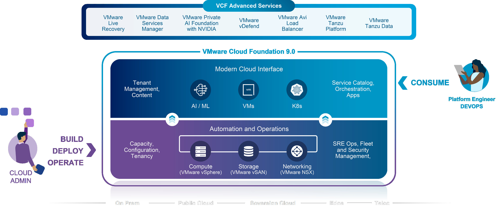
🎯 Learner Objectives
- تَعريف
VMware Cloud Foundationوَمَيزاتِه الرَّئيسيّة. - وَصف حالات الاستِخدام الشائِعة لِـ
VCF. - وَصف الأَمان المُتَكامِل عَبر جَميع الطَّبَقات.
- شَرح الخَدَمات المُتَقَدِّمة لِـ
VCF.
ما هُوَ VMware Cloud Foundation؟
VMware Cloud Foundation (VCF) — مَنصّة سَحابة خاصّة (Private Cloud Platform) تُوَفِّر مَنصّة سَحابيّة مُتَكامِلة بِالكامِل، مُؤَتمَتة، قابِلة لِلتَّوسيع، وَمَبنيّة على خَدَمات مُعَرَّفة بِالبَرمَجيّات لِلـ Compute وَStorage وَNetworking وَSecurity وَCloud Management.
حالات الاستِخدام الرَّئيسيّة — Key Use Cases
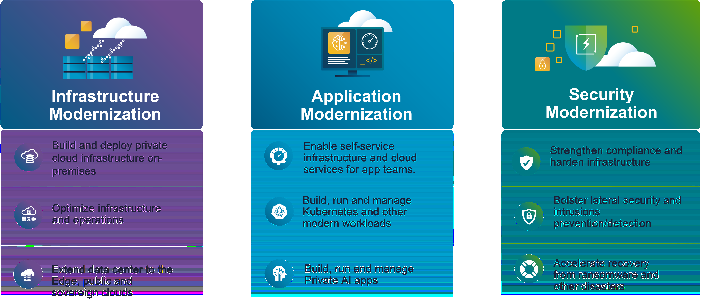
VCF يَدعَم حالات استِخدام مُتَنَوِّعة تَشمَل:
- Private Cloud Platform — مَنصّة سَحابة خاصّة مُتَكامِلة.
- Modern Application Platform — دَعم
Kubernetesوَالتَّطبيقات الحَديثة. - AI/ML Infrastructure — بِنية تَحتيّة لِلذَّكاء الاصطِناعي.
- Hybrid Cloud — تَكامُل مَع السُّحُب العامّة.
- Edge Computing — حَوسَبة الحَوافّ في المَواقِع المُوَزَّعة.
مُكَوِّنات VCF — Core Components
vSphere يُوَفِّر مَنصّة الحَوسَبة الافتِراضيّة الأَساسيّة لِـ VMware Cloud Foundation:
- ESX — مَنصّة الحَوسَبة الَّتي تُنشِئ وَتُشَغِّل الـ
VMsوَأَحمال العَمَل الأُخرى. - vCenter — خِدمة إِدارة مُضيفات
ESXالمُتَعَدِّدة مَع إِمكانيّاتvMotionوَHigh Availability.
VMware Cloud Foundation يُوَفِّر خَيارات تَخزين مَرِنة لِنَشر مَثيل VCF جَديد. التَّخزين الأَساسي يَعتَمِد على vSAN كَحَل HCI (Hyper-Converged Infrastructure) مُدمَج.
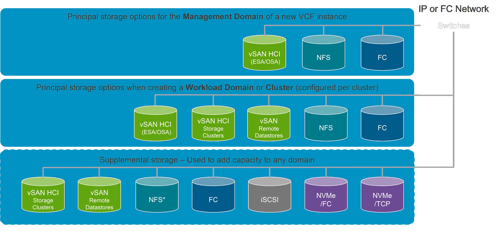
NSX يُوَفِّر الشَّبَكات المُعَرَّفة بِالبَرمَجيّات (Software-Defined Networking) بِما في ذَلِك:
- Overlay Networks — شَبَكات افتِراضيّة مُنفَصِلة عَن الفيزيائيّة.
- Micro-Segmentation — تَجزِئة دَقيقة لِلأَمان.
- Distributed Firewall — جِدار ناري مُوَزَّع.
- Load Balancing — مُوازَنة الأَحمال.
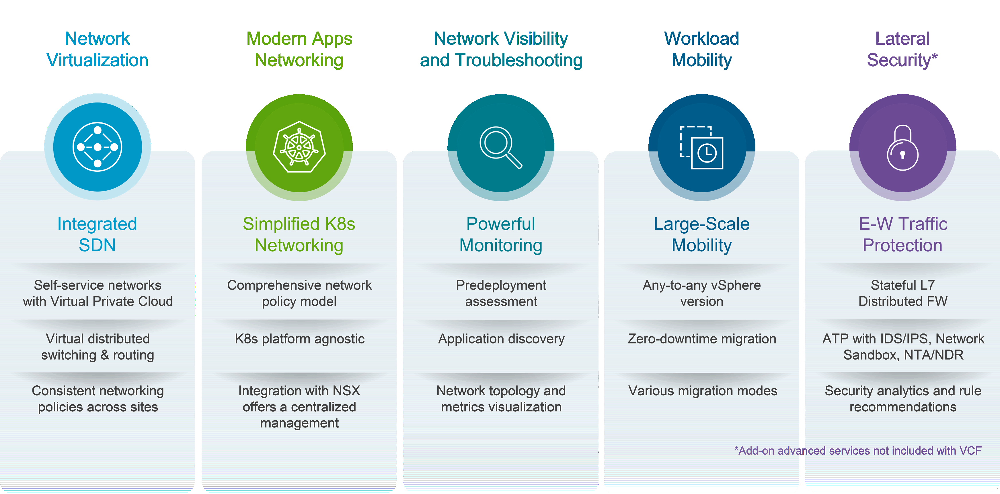
VCF Operations يُوَفِّر لِلمُسؤولين تَجرُبة مُوَحَّدة وَغَنيّة بِالمَيزات لإِدارة الأُسطول (Fleet Management):
- إِدارة الهُوِيّة وَالوُصول (
Identity & Access). - إِدارة الشَّهادات وَكَلِمات المُرور.
- إِدارة دَورة الحَياة (
Lifecycle Management). - إِدارة التَّكوين وَكَشف الانحِرافات (
Configuration Drift).
VCF Automation يُقَدِّم سَحابة خاصّة بِخِدمة ذاتيّة لِتَطبيقات AI وَK8s وَVM:
- Self-Service Catalog — كَتالوج خِدمة ذاتيّة لِلنَّشر.
- IaaS — بِنية تَحتيّة كَخِدمة.
- Template Designer — تَصميم قَوالِب النَّشر.
- Workflow Orchestration — تَنسيق سَير العَمَل.
vSphere Supervisor — خَدَمات أَساسيّة
vSphere Supervisor يُقَدِّم خَدَمات IaaS لِلسَّحابة الخاصّة مُباشَرَةً وَيَتَوَسَّع بِخَدَمات قابِلة لِلتَّمديد لِزيادة رِضا المُطَوِّرين. يَشمَل ذَلِك إِدارة VMs وَContainers وَKubernetes Clusters مِن مَنصّة واحِدة.
الأَمان في كُلّ طَبَقة — Security at Every Layer
الخَدَمات المُتَقَدِّمة — Advanced Services
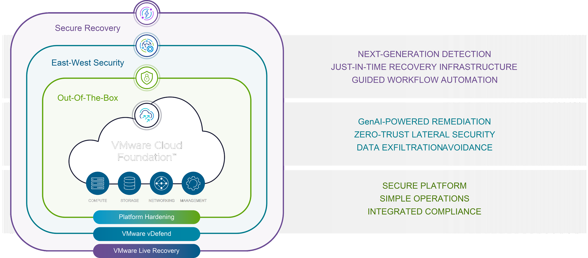
مَع VMware Cloud Foundation، يُمكِنُك شِراء إِضافات لِلوُصول إِلى حُلول إِضافيّة:
- Private AI —
VMware Private AI Foundation with NVIDIA. - Live Recovery — التَّعافي مِن الكَوارِث وَالهَجَمات السَّيبَرانيّة.
- vDefend — أَمان شَبَكي مُتَقَدِّم.
- DSM —
Data Services Manager— قَواعِد بَيانات كَخِدمة. - Avi LB —
Avi Load Balancer— مُوازَنة أَحمال مُتَقَدِّمة.
vSphere (الَّذي يَشمَل ESX وَvCenter) يُوَفِّر مَنصّة الحَوسَبة الافتِراضيّة الأَساسيّة لِـ VCF.VCF Operations يُوَفِّر لِلمُسؤولين تَجرُبة مُوَحَّدة وَغَنيّة بِالمَيزات لإِدارة الأُسطول.VCF Automation يُقَدِّم سَحابة خاصّة بِخِدمة ذاتيّة لِتَطبيقات AI وَKubernetes وَVM.NSX يُوَفِّر الشَّبَكات المُعَرَّفة بِالبَرمَجيّات بِما في ذَلِك Micro-Segmentation وَDistributed Firewall.vMotion هُوَ جُزء مِن vSphere الأَساسي وَلَيس خِدمة مُتَقَدِّمة. الخَدَمات المُتَقَدِّمة تَشمَل: Private AI, Live Recovery, vDefend, DSM, Avi LB.VCF Architecture
اِفهَم البِنية الهَرَميّة لِـ VCF: مِن الـ Domain إِلى الـ Instance إِلى الـ Fleet إِلى Private Cloud الكامِلة.
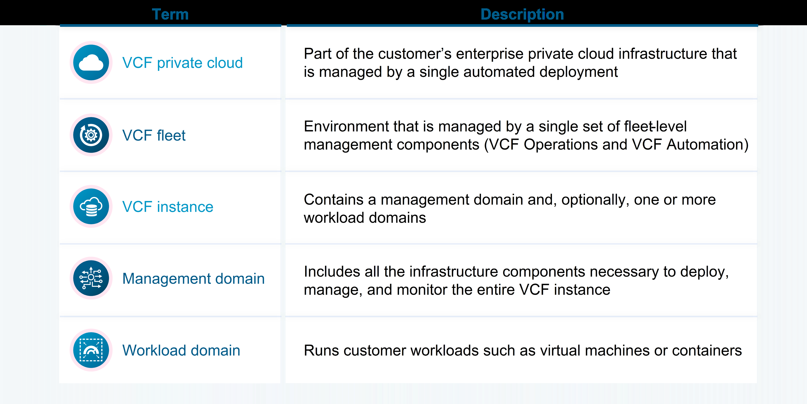
🎯 Learner Objectives
- شَرح هَندَسة
VCF Private Cloudالمِعمارِيّة. - التَّعَرُّف على مُكَوِّنات
VCF Private Cloud. - التَّمييز بَين مُكَوِّنات مُستَوى
FleetوَمُستَوىInstance. - وَصف الأَدوار المُختَلِفة في
VCF Private Cloud.
اللَّبِنات الأَساسيّة لِـ VCF — Building Blocks
Domain هُوَ بِناء مَنطِقي يُستَخدَم لِتَنظيم وَإِدارة المَوارِد في مَثيل VCF. كُلّ مَثيل يَتَضَمَّن:
- Management Domain — نِطاق الإِدارة (إِجباري) — يَستَضيف مُكَوِّنات الإِدارة.
- Workload Domain(s) — نِطاقات العَمَل (اختِياريّة) — لِأَحمال العَمَل الإِنتاجيّة.
أَوَّل vSphere Cluster داخِل Management Domain يَستَضيف مُكَوِّنات الإِدارة.
VCF Instance يَتَضَمَّن Management Domain وَاختِياريّاً واحِد أَو أَكثَر مِن Workload Domains.
🧠 مُكَوِّنات مُستَوى Instance
vCenter— إِدارة الحَوسَبة.NSX Manager— إِدارة الشَّبَكات.SDDC Manager— إِدارة دَورة الحَياة.ESX Hosts— خَوادِم الحَوسَبة.vSAN— التَّخزين المُتَقارِب.
VCF Fleet هُوَ بيئة تُدار بِواسِطة مَجموعة واحِدة مِن مُكَوِّنات الإِدارة على مُستَوى الأُسطول. يَحتَوي على واحِد أَو أَكثَر مِن VCF Instances.
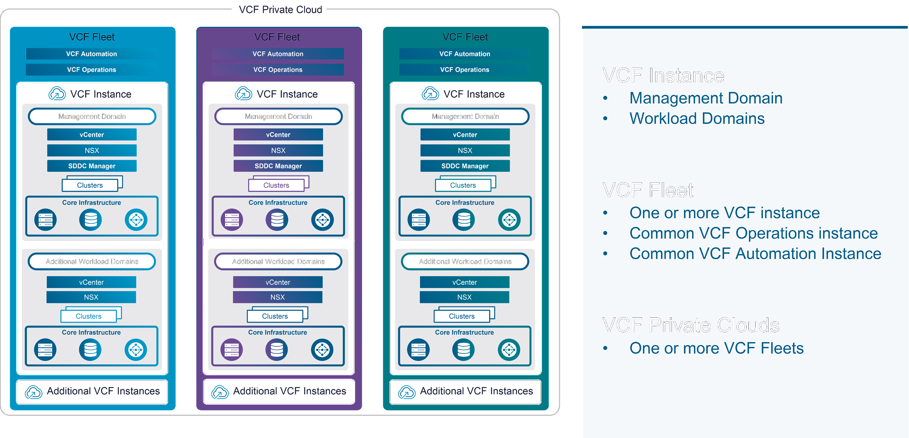
🧠 مُكَوِّنات مُستَوى Fleet
VCF Operations— إِدارة العَمَلِيّات وَالأُسطول.VCF Automation— الأَتمَتة وَالخِدمة الذّاتيّة.
الهَرَم الكامِل — VCF Private Cloud Hierarchy
VCF Private Cloud يُوَفِّر أَكثَر إِمكانيّات الإِدارة وَالاستِهلاك تَقَدُّماً لِمَوارِد مَركَز البَيانات المُعَرَّف بِالبَرمَجيّات. يَتَضَمَّن واحِداً أَو أَكثَر مِن VCF Fleets.
| المُستَوى | الوَصف | يَحتَوي على |
|---|---|---|
Private Cloud | أَعلى مُستَوى — السَّحابة الخاصّة الكامِلة | Fleet(s) |
Fleet | بيئة مُدارة بِـ VCF Operations + Automation | Instance(s) |
Instance | مَجموعة Domains مَع vCenter + NSX + SDDC Manager | Domain(s) |
Domain | بِناء مَنطِقي — Management أَو Workload | Cluster(s) + Hosts |
الأَدوار في VCF — Roles
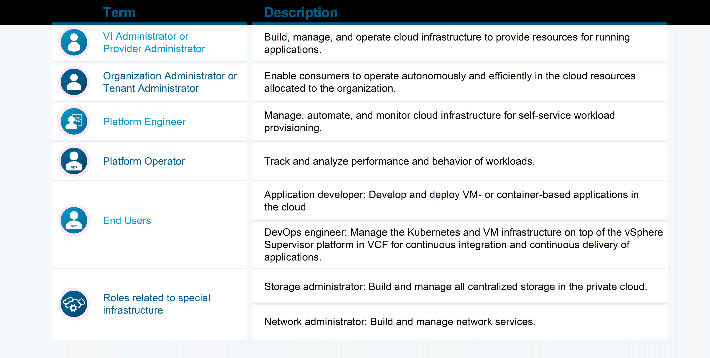
VCF Private Cloud يَدعَم أَدواراً مُتَعَدِّدة لِإِدارة وَاستِهلاك المَوارِد:
- Provider Administrator — يُدير البِنية التَّحتيّة عَبر
FleetsوَInstances. - Organization Administrator — يُدير مَوارِد المُؤسَّسة والمَشاريع.
- End User / Consumer — يَستَهلِك المَوارِد مِن الكَتالوج أَو
IaaS.
إِمكانيّات VCF Private Cloud
Domain هُوَ بِناء مَنطِقي يُستَخدَم لِتَنظيم وَإِدارة المَوارِد في مَثيل VCF.VCF يَحتَوي إِجبارِيّاً على Management Domain. نِطاقات العَمَل (Workload Domains) اختِياريّة.Fleet)، VCF Operations وَVCF Automation هُما مُكَوِّنا الإِدارة.Domain ← Instance ← Fleet ← Private Cloud.Provider Administrator يُدير مَوارِد البِنية التَّحتيّة الَّتي تَمتَد عَبر Fleets وَInstances مُتَعَدِّدة.VCF Deployment Overview
تَعَرَّف على خُطُوات نَشر VMware Cloud Foundation مِن الصِّفر — مِن تَحضير ESX Hosts إِلى تَشغيل VCF Automation الكامِل.
🎯 Learner Objectives
- التَّعَرُّف على خُطُوات عَمَليّة تَثبيت
VCF. - شَرح دَور
VCF Installer Appliance. - وَصف تَسَلسُل نَشر مُكَوِّنات
Fleet. - المُقارَنة بَين النَّشر بِالمُعالِج وَالنَّشر بِمِلَفّ
JSON Spec.
VCF Installer Appliance — جِهاز النَّشر الافتِراضي
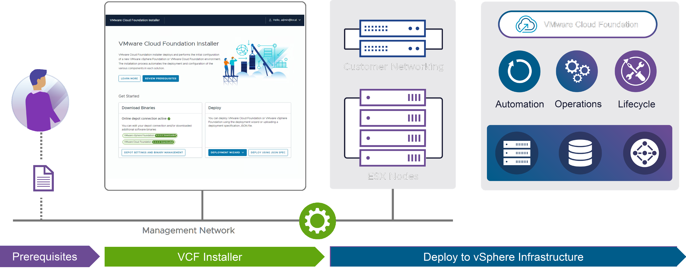
VCF Installer — جِهاز افتِراضي (Virtual Appliance) يُنشَر كَجُزء مِن عَمَليّة التَّثبيت الأَوَّلِيّة أَو التَّحويل. يَقوم بِأَتمَتة نَشر أُسطول VCF بِالكامِل — بِما في ذَلِك vCenter, SDDC Manager, NSX, VCF Operations, وَVCF Automation.
سير عَمَل النَّشر — Fleet Deployment Workflow
ESX Hosts Preparation — تَحضير المُضيفات
قَبل بَدء النَّشر، يَجِب تَنفيذ تَكوين أَساسي على كُلّ مُضيف ESX في نِطاق الإِدارة:
- تَنفيذ تَثبيت تَفاعُلي لِـ
ESX 9.0. - تَكوين
VLAN IDلِشَبَكة الإِدارة. - تَكوين
VLAN IDلِشَبَكةVM Network. - تَكوين
NTPلِمُزامَنة الوَقت.
vCenter Deployment — نَشر vCenter
- نَشر
vCenter Applianceعلى أَوَّل مُضيفESXفي نِطاق الإِدارة. - تَوصيل
vCenterبِـVM Network port groupعلىESX host VSS. - تَكوين مَخزَن بَيانات
vSANلِتَخزين مِلَفّاتvCenter. - تَشغيل سِكريبتات التَّمهيد الأَوَّل (
First Boot Scripts).
SDDC Manager Deployment — نَشر SDDC Manager
- نَشر
SDDC Manager Applianceعلى أَوَّل مُضيفESX. - تَوصيل الجِهاز بِـ
VM Network port groupعلىESX host VSS. - تَخزين مِلَفّات الجِهاز في مَخزَن البَيانات الرَّئيسي (
Principal Storage Datastore).
vSphere Cluster Configuration — تَكوين كَتَلَسْتِر vSphere
- إِنشاء
Data CenterوَvSphere Clusterجَديد فيvCenter. - إِضافة جَميع مُضيفات
ESXفي نِطاق الإِدارة. - إِنشاء
vSphere Distributed Switchلِجَميع المُضيفات. - تَرحيل
VMsإِلىVM Management distributed port group. - تَرحيل
vmknicsالإِداريّة إِلىvDS. - تَوسيع
vSAN Datastoreلِيَشمَل جَميع المُضيفات. - تَكوين
HAوَDRSفي الكَتَلَسْتِر.
NSX Deployment & Configuration
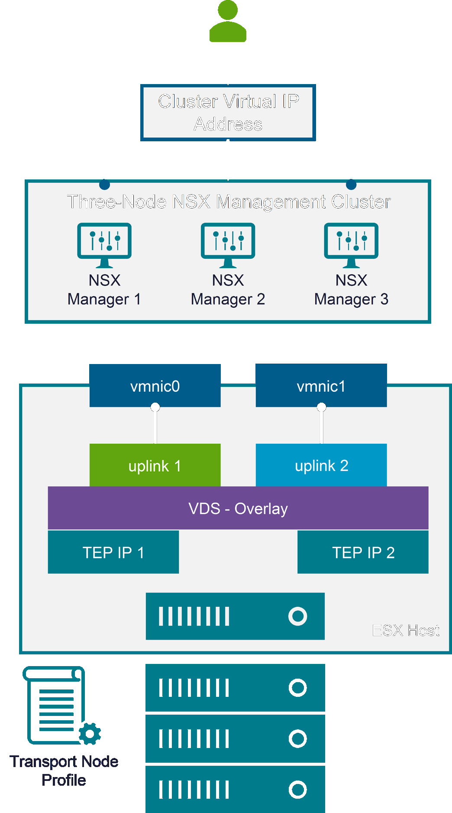
- نَشر أَوَّل عُقدة
NSX Manager. - إِضافة
vCenterكَـCompute Manager. - إِنشاء
Overlay Transport Zone. - إِنشاء
TEP IP Pool. - إِنشاء
NSX Uplink Profileلِلمُضيفات. - إِنشاء
Transport Node Profileوَتَطبيقه على جَميع المُضيفات.
VCF Operations Fleet Management Deployment
بَعد اكتِمال تَكوين NSX، يَنشُر VCF Installer جِهاز VCF Operations Fleet Management. ثُمَّ يُستَخدَم لِنَشر:
VCF Operations(appliance + collector appliance).VCF Automation.
VCF Operations Deployment
يَتِم نَشر جِهازَين:
VCF Operations Appliance— جِهاز العَمَلِيّات الرَّئيسي.VCF Operations Collector Appliance— جِهاز جَمع البَيانات.
VCF Automation Deployment
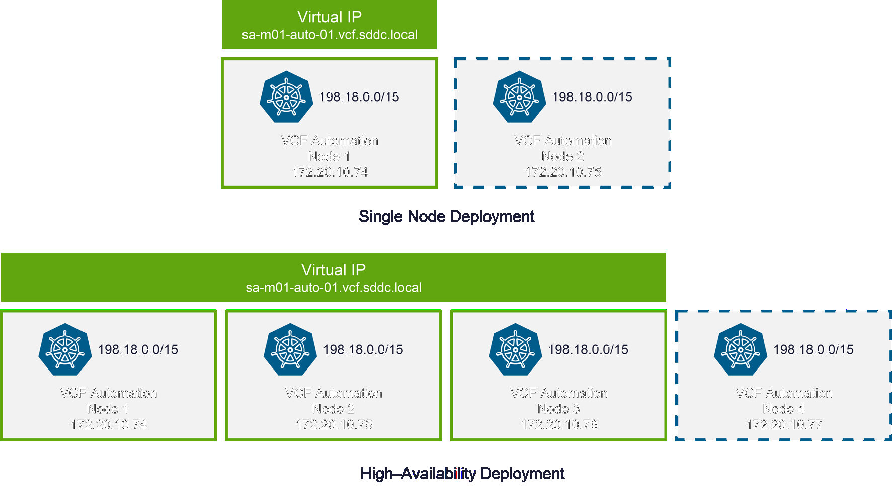
يُمكِن نَشر VCF Automation كَعُقدة واحِدة أَو كَكَتَلَسْتِر HA مِن ثَلاث عُقَد:
- إِنشاء
Virtual IPلِمُوازَنة الحِمل عَبر العُقَد. - عُنوان
IPاحتِياطي لِنَشر عُقدة بَديلة عِند الفَشَل. - تَكوين حَلّ قائِم على
Kubernetesفي كُلّ جِهاز لِنَشرPodsوَContainers. - إِنشاء شَبَكة داخِليّة لِلاتِّصال بَين الحاوِيات.
مُلَخَّص النَّشر — Deployment Summary
🧠 اِحفَظ تَسَلسُل النَّشر — Memorize the Order
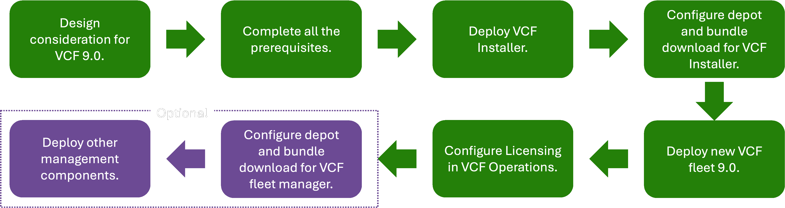
| # | المُكَوِّن | المَرحَلة |
|---|---|---|
| 0 | ESX Hosts | تَحضير يَدَوي |
| 1 | vCenter | نَشر آلي |
| 2 | SDDC Manager | نَشر آلي |
| 3 | vSphere Cluster | تَكوين (HA, DRS, vDS, vSAN) |
| 4 | NSX Manager | نَشر + تَكوين |
| 5 | Fleet Management | نَشر |
| 6 | VCF Operations | نَشر |
| 7 | VCF Automation | نَشر |
النَّشر بِمِلَفّ JSON — Deployment via JSON Specification
🧙 Wizard-Based Deployment
- إِدخال التَّكوين يَدَويّاً عَبر واجِهة المُعالِج.
- مُراجَعة المُعامِلات قَبل البَدء.
- مُناسِب لِلنَّشر الأَوَّلي أَو البيئات الصَّغيرة.
📄 JSON Spec Deployment
- اختِيار
DEPLOY USING JSON SPECمِن الصَّفحة الرَّئيسيّة. - رَفع مِلَفّ
JSONأَو سَحبه إِلى المُعالِج. - مُعايَنة وَتَحرير الإِعدادات قَبل النَّشر.
- مُناسِب لِلنَّشر المُتَكَرِّر والقابِل لِلأَتمَتة.
التَّحَقُّق وَالنَّشر — Validation & Deployment
VCF Installer هُوَ جِهاز افتِراضي (Virtual Appliance) يَقوم بِأَتمَتة نَشر أُسطول VCF بِالكامِل.NSX Manager يُنشَر آليّاً بِواسِطة VCF Installer. التَّحضير اليَدَوي يَشمَل: تَثبيت ESX, تَكوين VLAN الإِدارة, VLAN الـ VM Network, وَNTP.VCF Installer هُوَ vCenter، ثُمَّ SDDC Manager، ثُمَّ تَكوين vSphere Cluster، ثُمَّ NSX.NSX، يَنشُر VCF Installer جِهاز VCF Operations Fleet Management، الَّذي يُستَخدَم بَعدَها لِنَشر VCF Operations وَVCF Automation.VCF Automation يُمكِن نَشره كَعُقدة واحِدة أَو كَكَتَلَسْتِر HA مِن ثَلاث عُقَد مَع Virtual IP لِمُوازَنة الحِمل.DEPLOY USING JSON SPEC مِن الصَّفحة الرَّئيسيّة لِلـ VCF Installer وَرَفع مِلَفّ JSON يَحتَوي على جَميع مُعامِلات النَّشر.vSphere Cluster، يَتِم تَكوين HA (High Availability) وَDRS (Distributed Resource Scheduler) في الكَتَلَسْتِر.VCF Upgrade Paths to 9.0
لَيسَ الجَميع يَبدَأ مِن الصِّفر. تَعَرَّف على المَسارات المُختَلِفة لِلوُصول إِلى VCF 9.0 مِن بيئاتِك الحاليّة.
🎯 Learner Objectives
- شَرح الطُّرُق المُختَلِفة لِبَدء رِحلَتِك إِلى
VCF 9.0. - شَرح عَمَليّة التَّرقية إِلى
VCF 9.0مِن بِنيةvSphereوَvSANوَNSXالحاليّة. - شَرح عَمَليّة تَرقية
VCF 5.xإِلىVCF 9.0.
نُقطة البِداية — Paths to VCF 9.0
يُمكِنُك بَدء رِحلَتِك إِلى VCF Private Cloud إِمّا كَـ نَشر جَديد أَو بِاستِخدام البِنية التَّحتيّة الحاليّة لِـ vSphere, vSAN, NSX أَو VCF 5.x.
🧠 أَربَعة مَسارات لِلوُصول إِلى VCF 9.0
| المَسار | نُقطة البِداية | المَراحِل |
|---|---|---|
| New | لا بِنية تَحتيّة | نَشر جَديد بِالكامِل بِاستِخدام VCF Installer |
| Path A | vSphere 8.0 | تَرقية إِلى vSphere 9.0 ← نَشر VCF 9.0 |
| Path B | vSphere 8.x + Aria | تَرقية Aria → VCF Ops 9.0 + vSphere → 9.0 ← نَشر VCF 9.0 |
| Path C | VCF 5.2 | تَرقية مَوضِعيّة (In-Place) إِلى VCF 9.0 |
Path A: vSphere 8.0 → VCF 9.0
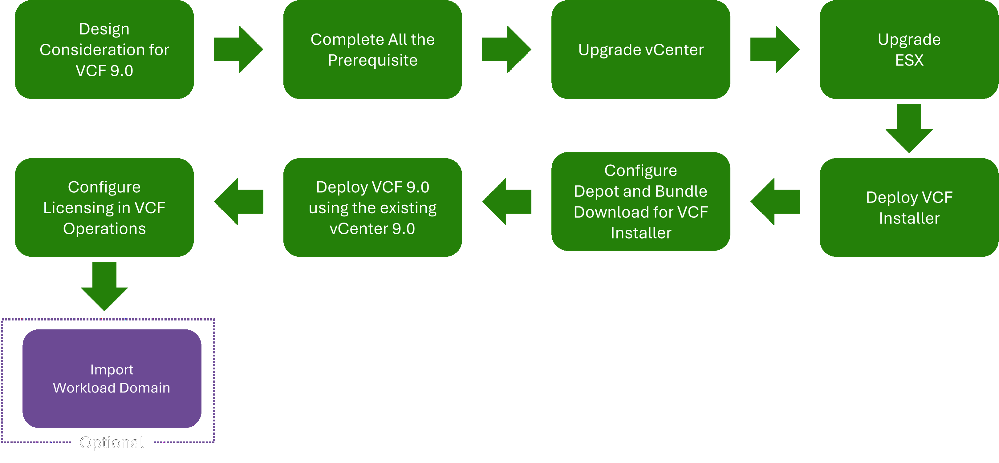
تَرقية بِنية vSphere الحاليّة مِن الإِصدار 8.0 إِلى الإِصدار 9.0.
نَشر VCF 9.0 بِاستِخدام VCF Installer مَع vSphere 9.0 الحاليّة. يَستَخدِم VCF Installer مَثيل vCenter 9.0 الحالي كَـ Management Domain vCenter لِأَوَّل مَثيل VCF.
Path B: vSphere 8.x + Aria → VCF 9.0
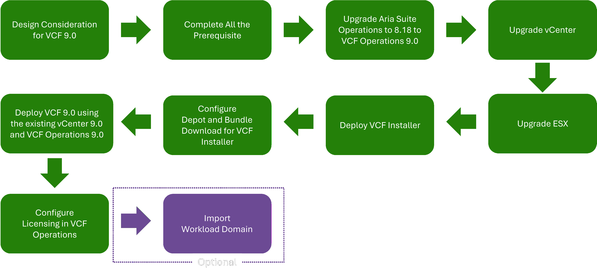
- تَرقية
Aria OperationsإِلىVCF Operations 9.0. - تَرقية
vSphereالحالي إِلى9.0.
نَشر VCF 9.0 بِاستِخدام VCF Installer مَع vCenter 9.0 وَVCF Operations 9.0 الحاليّين.
Path C: VCF 5.2 → VCF 9.0 (In-Place Upgrade)
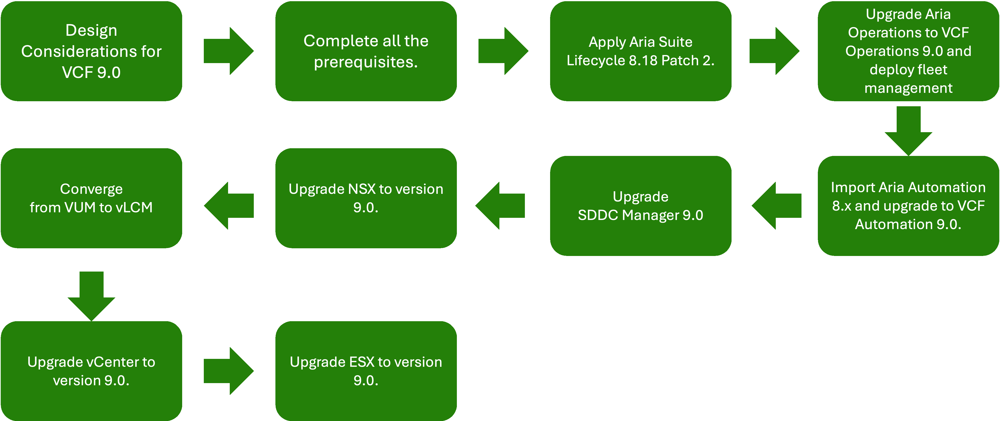
يُمكِنُك بِناء VCF Private Cloud بِتَرقية VCF 5.x الحالي إِلى VCF 9.0 مِن خِلال تَرقية مَوضِعيّة (In-Place Upgrade).
تَرقية مُكَوِّنات Aria إِلى مُكَوِّن VCF Fleet 9.0 Management.
تَرقية مُكَوِّنات VCF 5.2 بِتَسَلسُل مُحَدَّد:
- تَرقية
vCenter. - تَرقية
NSX. - تَرقية
ESX Hosts. - تَرقية
vSAN. - تَرقية
SDDC Manager.
مُقارَنة المَسارات — Upgrade Paths Comparison
| المَسار | نُقطة البِداية | التَّعقيد | المَراحِل |
|---|---|---|---|
| New Deploy | لا شَيء | ⭐ | VCF Installer مُباشَرَة |
| vSphere 8 → 9 | vSphere 8.0 | ⭐⭐ | Upgrade vSphere → Deploy VCF |
| vSphere + Aria | vSphere 8.x + Aria | ⭐⭐⭐ | Upgrade Aria + vSphere → Deploy VCF |
| VCF 5.2 | VCF 5.2 | ⭐⭐⭐⭐ | In-place upgrade بِتَسَلسُل دَقيق |
❌ أَخطاء شائِعة في التَّرقية
- تَخَطّي التَّسَلسُل — تَرقية
ESXقَبلvCenterيُسَبِّب مَشاكِل تَوافُق. - عَدَم مُراجَعة Readiness Guide — قَد يُؤَدّي لِفَشَل التَّرقية.
- تَرقية مُباشِرة مِن VCF 4.x إِلى 9.0 — يَجِب التَّرقية إِلى
5.2أَوَّلاً. - نِسيان تَرقية Aria → VCF Operations — قَبل نَشر
VCF 9.0فيPath B.
vSphere 8، تَرقية vSphere + Aria، وَتَرقية VCF 5.x.Path A، يَتِم تَرقية vSphere الحالي إِلى 9.0، ثُمَّ في المَرحَلة الثّانية يُنشَر VCF 9.0.Path B، يَتِم تَرقية Aria Operations إِلى VCF Operations 9.0 (وَلَيس Aria Operations 9.0).VCF 5.2 إِلى 9.0 هِيَ تَرقية مَوضِعيّة (In-Place Upgrade) تُنَفَّذ على مَرحَلَتَين بِتَسَلسُل مُحَدَّد.VCF 5.2 → 9.0، يَتِم تَرقية مُكَوِّنات Aria إِلى مُكَوِّن VCF Fleet 9.0 Management.VCF Licensing Overview
اِفهَم نَموذَج تَرخيص VMware Cloud Foundation 9.0 — مِن العُروض الأَساسيّة إِلى الخَدَمات المُتَقَدِّمة إِلى إِدارة الامتِثال.
🎯 Learner Objectives
- وَصف تَفاصيل عُروض
VCF,VVF, وَالخَدَمات المُتَقَدِّمة. - شَرح الفَوائد الرَّئيسيّة لإِدارة تَراخيص
VCF 9.0. - وَصف تَحَدِّيات التَّرخيص وَكَيف يَحُلّها
VCF 9.0. - شَرح أَوضاع التَّسجيل وَسُلوك انتِهاء الصَّلاحيّة.
العُروض الأَساسيّة — Primary Offerings
المَنصّة الشّامِلة لِلسَّحابة الخاصّة — تَشمَل جَميع المُكَوِّنات:
vSphere(includesVKS,vCenter)vSAN— 1 TiB لِكُلّ CoreNSX+HCXVCF Operations+VCF AutomationBroadcom Support
التَّرخيص: اشتِراك — لِكُلّ Core — حَدّ أَدنى 16 cores لِكُلّ CPU.
نَفس مُكَوِّنات VCF لَكِن لِلمَواقِع المُوَزَّعة (Edge):
- حَدّ أَدنى 8 cores لِكُلّ
CPU. - يَشمَل
vSphere for vSAN Witness. - قُيود: مَواقِع
Edgeفَقَط — 10 مَواقِع كَحَدّ أَدنى خِلال سَنة — 256 core كَحَدّ أَقصى لِكُلّ مَوقِع.
عَرض أَبسَط يَتَضَمَّن:
vSphere(includesVKS,vCenter)VCF Operations for VVFvSAN— 0.25 TiB لِكُلّ Core فَقَط
التَّرخيص: اشتِراك — لِكُلّ Core — حَدّ أَدنى 16 cores — مُتاح بِفَترات 1 وَ3 سَنَوات.
عُروض vSphere المُستَقِلّة:
Enterprise Plus
- اشتِراك — لِكُلّ
Core. - 16 cores كَحَدّ أَدنى.
- فَترات 1 وَ3 سَنَوات.
Standard
- اشتِراك — لِكُلّ
Core. - 16 cores كَحَدّ أَدنى.
- غَير مُتاح في
APJ.
الخَدَمات المُتَقَدِّمة — Advanced Services Licensing
| الخِدمة | نَموذَج التَّرخيص | التَّوَفُّر |
|---|---|---|
Private AI Foundation | لِكُلّ Core — حَدّ أَدنى 192 core (3 hosts) | VCF فَقَط |
Data Services Manager | لِكُلّ Core — 16 cores/CPU | VCF فَقَط |
Live Recovery | لِكُلّ VM مَحمي | VCF + VVF |
vSAN Additional Capacity | لِكُلّ TiB | VCF + VVF |
vDefend Firewall / ATP | لِكُلّ Core — 16 cores/CPU | VCF فَقَط |
Avi Load Balancer | لِكُلّ Service Unit | VCF + VVF |
تَحَدِّيات التَّرخيص — Licensing Challenges
❌ Before VCF 9.0
- مِفتاح لِكُلّ مُكَوِّن — عَدَد كَبير مِن مَفاتيح التَّرخيص.
- مَفاتيح خاصّة بِالإِصدار — مَثَل
vSphere 7مُقابِلvSphere 8. - رُؤية مَحدودة —
vCenterواحِد في كُلّ مَرّة. - تَتَبُّع يَدَوي — جَداوِل بَيانات قَد تُؤَدّي لِتَراخيص غَير مُستَخدَمة.
- تَعقيد التَّقسيم وَالدَّمج — عِند تَغيير البِنية التَّحتيّة.
✅ VCF 9.0 Solves
- مِلَفّ تَرخيص واحِد — (Core, TiB).
- لا مَفاتيح خاصّة بِالإِصدار — لا حاجَة لِمِفتاح جَديد مِن v8 → v9.
- رُؤية مُوَحَّدة — عَبر
VCF Operations. - عَرض مُجَمَّع لِلاستِهلاك — بَدَل الجَداوِل.
- تَعديل ديناميكي لِلكَمِّيّات — مُرونة عِند التَّوَسُّع.
إِمكانيّات وَفَوائد التَّرخيص — Capabilities & Benefits
🧠 VCF 9.0 Licensing = 3 إِمكانيّات + 5 فَوائد
الإِمكانيّات:
- Unified Management — إِدارة مُوَحَّدة مَع رُؤية على مُستَوى المُؤسَّسة.
- Simplified Operations — عَمَلِيّات مُبَسَّطة بِتَرخيص مُنتَج واحِد.
- Single License — تَرخيص واحِد عَبر جَميع المُكَوِّنات.
الفَوائد:
- Visibility — رُؤية شامِلة.
- Simplicity — بَساطة.
- Reduced Complexity — تَقليل التَّعقيد.
- Reduced Process — تَقليل الإِجراءات.
- Efficiency — كَفاءة.
إِدارة التَّرخيص وَالامتِثال — License Management & Compliance
🌐 Connected Mode
تَحديثات آليّة لِاستِهلاك التَّراخيص بِنَقرة زِرّ واحِدة.
🔒 Disconnected Mode
إِنشاء مِلَفّ امتِثال يَدَويّاً وَرَفعه إِلى بَوّابة Broadcom.
سُلوك انتِهاء الصَّلاحيّة — Expiration Behavior
VCF يُرَخَّص بِنَموذَج اشتِراك لِكُلّ Core مَع حَدّ أَدنى 16 cores لِكُلّ CPU.VCF يُوَفِّر 1 TiB لِكُلّ Core بَينَما VVF يُوَفِّر 0.25 TiB لِكُلّ Core.Live Recovery (وَكَذَلِك vSAN Additional Capacity وَAvi LB) مُتاحة لِـ VCF وَVVF. أَمّا Private AI, DSM, vDefend فَهِي لِـ VCF فَقَط.VCF 9.0، مِلَفّ تَرخيص واحِد عَبر جَميع مُكَوِّنات VCF بَدَلاً مِن مِفتاح لِكُلّ مُكَوِّن.VCF Edge يَتَطَلَّب حَدّاً أَدنى 8 cores لِكُلّ CPU (مُقارَنة بِـ 16 cores لِلـ VCF العادي).VCF Operations & Fleet Management
تَعَرَّف على VCF Operations Console كَواجِهة إِدارة مَركَزِيّة وَعلى وَظائف Fleet Management الشّامِلة.
🎯 Learner Objectives
- وَصف واجِهة
VCF Operations Console. - وَصف وَظائف
Fleet ManagementفيVCF Operations.
VCF Operations Console — نَظرة عامّة
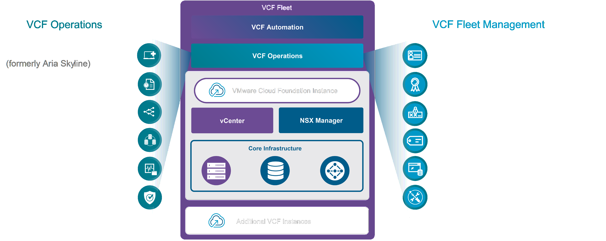
VCF Operations Console — واجِهة الإِدارة المَركَزِيّة لِعِدّة مُكَوِّنات VCF. تُستَخدَم لِلإِشراف على عَمَلِيّات البِنية التَّحتيّة الكامِلة.
إِمكانيّات الإِدارة — Management Capabilities
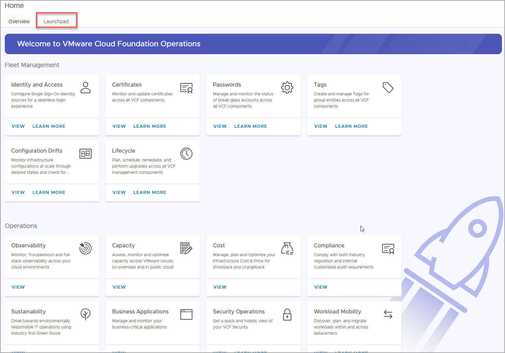
🧠 اِحفَظ الإِمكانيّات الثَّمان لِـ VCF Operations Console
- Assign VCF Licensing — تَعيين تَراخيص
VCF. - Configure Identity Providers — تَكوين مُوَفِّري الهُوِيّة.
- Link vCenter Instances — رَبط مَثيلات
vCenterبِمَجموعات. - Monitor Health — مُراقَبة صِحّة المُكَوِّنات وَأَحمال العَمَل.
- View Events & Logs — عَرض الأَحداث وَالسِّجِلّات.
- Manage Tags — إِنشاء وَتَحرير وَاستِيراد عَلامات
vCenter. - Lifecycle Management — إِدارة دَورة الحَياة.
- Configuration Drift — مُراقَبة انحِراف التَّكوين.
صَفَحات VCF Operations — Console Pages
📊 Overview Tab
- مُلَخَّص عالي المُستَوى لِلبِنية التَّحتيّة.
Domains,Configuration Drifts,Certificates.Workload Operations,Alerts.Cost & Capacity,Compliance.
🚀 Launchpad Tab
- وُصول سَريع لِأَعمِدة العَمَلِيّات.
- إِدارة التَّكوين.
- تَحسين الأَداء وَالسَّعة.
- استِكشاف المَشاكِل وَحَلّها.
| الصَّفحة | الوَظيفة |
|---|---|
Inventory | عَرض الكائِنات: Domains, VMs, Datastores, Networks, Groups |
Infrastructure Ops | مُراقَبة البِنية التَّحتيّة — لَوحات تَحَكُّم وَتَقارير وَتَنبيهات |
Workload Ops | مُراقَبة التَّطبيقات وَالخَدَمات — نَشر Telegraf Agents |
Fleet Management | SSO, شَهادات, كَلِمات مُرور, عَلامات, دَورة حَياة, مَهام |
Capacity | مُراقَبة استِخدام المَوارِد وَتَخطيط النُّمُو وَالتَّكلِفة |
Security | عَمَلِيّات الأَمان وَالتَّدقيق وَالامتِثال التَّنظيمي |
License Management | إِدارة التَّسجيل وَالتَّراخيص وَمُراقَبة الاستِخدام |
Administration | حِسابات التَّكامُل, Cloud Proxies, إِعدادات عامّة |
Developer Center | واجِهات API وَCLI وَManagement Pack Builder |
إِدارة الأُسطول — Fleet Management Functions
VCF Single Sign-On يُوَفِّر مُصادَقة مُوَحَّدة لِلوُصول إِلى مُكَوِّنات VCF المُتَعَدِّدة بِمَجموعة بَيانات اعتِماد واحِدة:
- تَسجيل دُخول سَلِس عَبر جَميع مُكَوِّنات
VCF. - إِدارة هُوِيّة على مُستَوى الأُسطول مِن
VCF Operations. - دَعم
IDPsخارِجيّة:Okta,Microsoft EntraID,ADFS,Ping,Generic SAML 2.0. - مَصادِر هُوِيّة:
Active Directory/Open LDAPعَبرOIDC,SAML,LDAP.
يَتِم نَشر VCF Identity Broker Appliance عَبر Fleet Management.
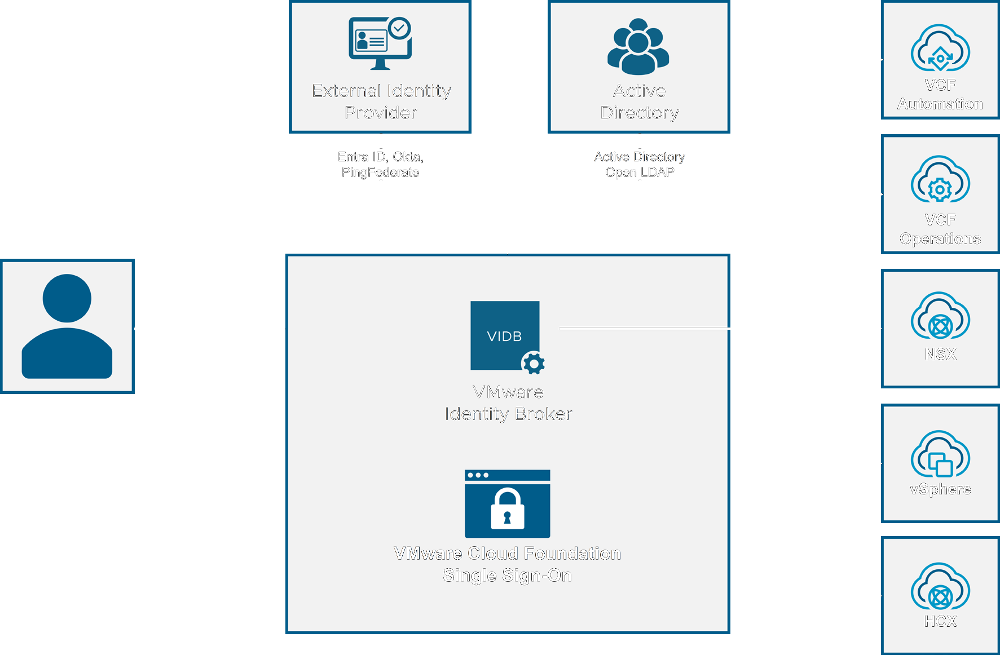
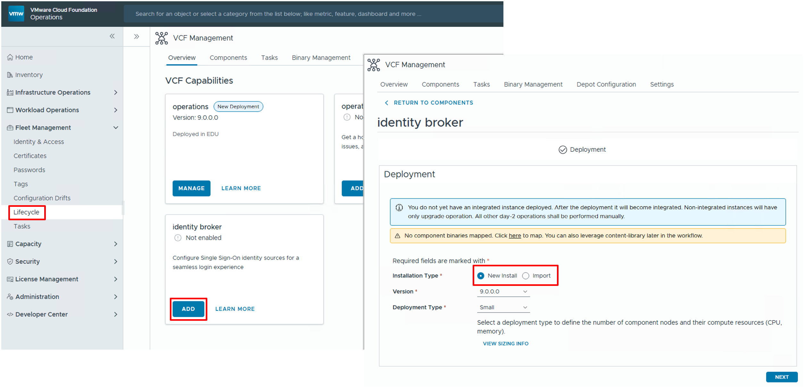
إِدارة مَركَزِيّة لِلشَّهادات عَبر مُكَوِّنات البِنية التَّحتيّة وَالإِدارة في واجِهة واحِدة:
- Central Management — إِدارة مَركَزِيّة لِجَميع الشَّهادات.
- Nondisruptive Replacement — استِبدال بِدون انقِطاع.
- Multiple CAs — دَعم سُلُطات شَهادات مُتَعَدِّدة.
- Expiry Notifications — تَنبيهات انتِهاء الصَّلاحيّة.
- Automatic Renewal — تَجديد آلي مَع
VMware CAوَMicrosoft CA.
إِدارة مَركَزِيّة لِكَلِمات مُرور root وَlocal admin لِكُلّ مُكَوِّن VCF:
- تَوحيد إِدارة كَلِمات المُرور.
- لَوحة تَحَكُّم مُوَحَّدة لِلإِدارة وَالإِشعارات.
- مَعايير مُوَحَّدة: التَّعقيد، تَكرار التَّدوير، فَترة الإِشعار.
إِدارة مَركَزِيّة لِلعَلامات عَبر مُكَوِّنات VCF المُتَعَدِّدة:
- تَطبيق العَلامات على عِدّة مُكَوِّنات
VCFفي آنٍ واحِد. - تَناسُق عَبر
NSX,vCenter,VCF Automation. - تَعيين العَلامات على نِطاق واسِع.
- استِيراد العَلامات مِن مَثيلات
vCenterالحاليّة مَع حَلّ التَّعارُضات.
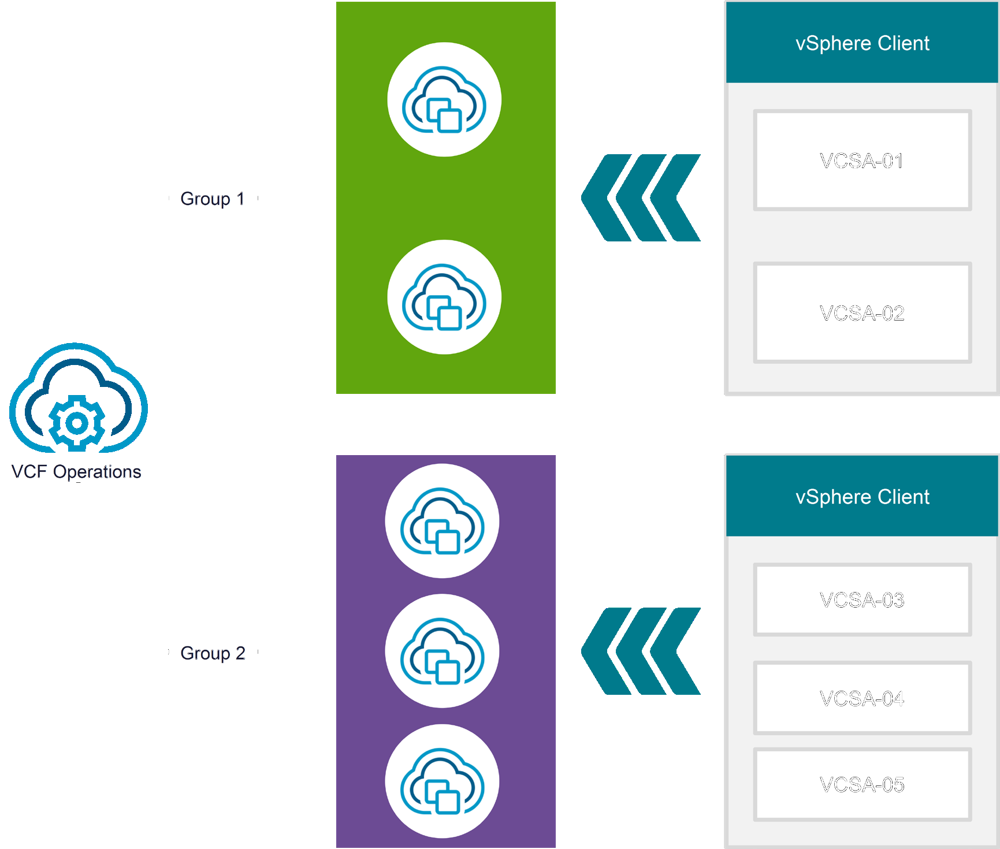
في VCF 9.0، vCenter Linked Groups تَحُلّ مَحَلّ Enhanced Linked Mode (ELM) لِرَبط مَثيلات vCenter:
المُتَطَلَّبات الأَساسيّة
vCenterمُسَجَّل مَعVCF Operations.- إِصدار
vCenter 9.0أَو أَحدَث. VCF SSOمُكَوَّن.- جَميع المَثيلات بِنَفس مُوَفِّر الهُوِيّة.
vCenterلَيس في وَضعELM.
إِمكانيّات إِدارة دَورة الحَياة تَشمَل:
- Deploy — نَشر مُكَوِّنات جَديدة.
- Upgrade — تَرقية المُكَوِّنات الحاليّة.
- Plan — تَخطيط التَّرقيات.
- Monitor — مُراجَعة وَمُراقَبة حالة التَّرقية.
يَشمَل نَشر VCF Operations for Logs وَVCF Operations for Networks.
Centralized Depots — المُستَودَعات المَركَزِيّة
🌐 Online Depot
- لِلبيئات المُتَّصِلة بِالإِنتِرنِت.
- المُصادَقة عَبر
Broadcom Support Portal. - تَحديث مُستَمِر بِالتَّحديثات وَالتَّصحيحات.
🔒 Offline Depot
- لِلبيئات المَعزولة (
Air-Gapped). - استِخدام
VCF Download Toolلِلتَّنزيل. - تَقديم الحُزَم يَدَويّاً لِـ
VCF Operations.
كَشف انحِراف التَّكوين — Configuration Drift
VCF Operations Console هِيَ واجِهة الإِدارة المَركَزِيّة لِعِدّة مُكَوِّنات VCF المُثَبَّتة وَالمُكَوَّنة أَثناء النَّشر.VCF SSO يَدعَم Okta, Microsoft EntraID, ADFS, Ping, وَGeneric SAML 2.0 كَمُوَفِّري هُوِيّة خارِجيّين.VCF 9.0، vCenter Linked Groups في VCF Operations تَحُلّ مَحَلّ Enhanced Linked Mode (ELM).Configuration Template يُستَخدَم لِإِنشاء مَلَفّ مَرجِعي (Golden Template) مِن vCenter مُكَوَّن، ثُمَّ مُقارَنة المَثيلات الأُخرى بِه لِكَشف الانحِرافات.VMware CA وَMicrosoft CA.Air-Gapped)، يُستَخدَم Offline Depot مَع VCF Download Tool لِتَنزيل الحُزَم وَتَقديمها لِـ VCF Operations.Developer Center تُوَفِّر وُصولاً لِـ APIs وَCLI وَأَداة Management Pack Builder لِبِناء حُزَم إِدارة مُخَصَّصة.VCF Automation
تَعَرَّف على VCF Automation — المَنصّة الَّتي تُحَوِّل بِنيَتَك التَّحتيّة إِلى سَحابة خاصّة بِخِدمة ذاتيّة لِتَطبيقات AI وَK8s وَVM.
🎯 Learner Objectives
- شَرح أَولَوِيّات العُمَلاء لِلأَتمَتة.
- وَصف أَدوار المُستَخدِمين في
VCF Private Cloud. - شَرح مَسؤوليّات
Provider Administrator. - وَصف مَسؤوليّات
Organization Administrator. - شَرح خَيارات استِهلاك المُستَخدِم النِّهائي.
نَظرة عامّة — VCF Automation Overview
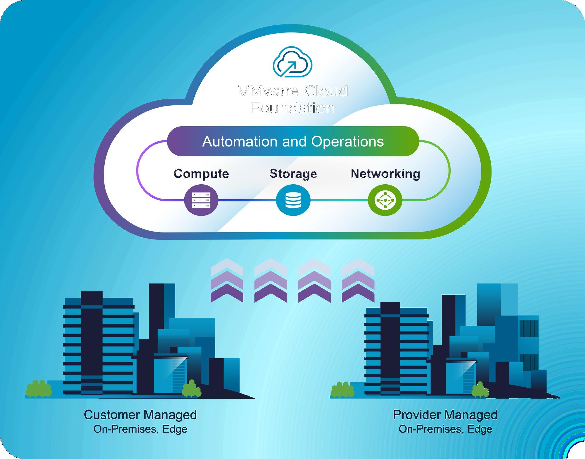
VCF Automation — يُقَدِّم سَحابة خاصّة جاهِزة لِفِرَق التَّطبيقات بِخِدمة ذاتيّة لِتَطبيقات AI/ML, Kubernetes, وَTraditional VMs. يَجمَع بَين إِمكانيّات Aria Automation وَVMware Cloud Director في تَجرُبة سَحابيّة مُوَحَّدة.
أَدوار المُستَخدِمين — User Personas
| الدَّور | المَسؤوليّة | URL |
|---|---|---|
| Provider Admin Enterprise IT / Service Provider | تَنظيم مَوارِد البِنية التَّحتيّة بَين المُستَأجِرين — إِعداد الشَّبَكات — إِدارة الاستِخدام وَChargeback — إِدارة النِّظام البيئي لِلخَدَمات. | /provider |
| Org Admin LOB Admin / Platform Engineer | إِنشاء مَشاريع — تَفعيل استِهلاك جَديد بِـ Namespaces وَVPCs — فَرض سِياسات (Quota, Leases, Approvals) — إِدارة المُحتَوى. | /org |
| End User Developer / DevOps / Data Scientist | استِهلاك خَدَمات IaaS وَالكَتالوج — عَمَلِيّات Day 2 — رُؤية أَحمال العَمَل. | /org |
مُكَوِّنات VCF Automation
🧠 Building Blocks — اللَّبِنات الأَساسيّة
- Modern Cloud Interface — واجِهة سَحابيّة حَديثة (
UI / CLI / API). - Tenant Management — إِدارة المُستَأجِرين.
- Content Management — إِدارة المُحتَوى (صُوَر, قَوالِب).
- Orchestration & Extensibility — تَنسيق وَتَوسيع.
- Workload Lifecycle Management — إِدارة دَورة حَياة أَحمال العَمَل.
- Governance & Policies — حَوكَمة وَسِياسات.
- Infrastructure as Code — بِنية تَحتيّة كَكود.
- Private AI Automation — أَتمَتة الذَّكاء الاصطِناعي الخاصّ.
- Supervisor Services — خَدَمات المُشرِف.
- Self-Service Catalog + IaaS — كَتالوج ذاتي + بِنية تَحتيّة كَخِدمة.
Provider Administration — إِدارة المُزَوِّد
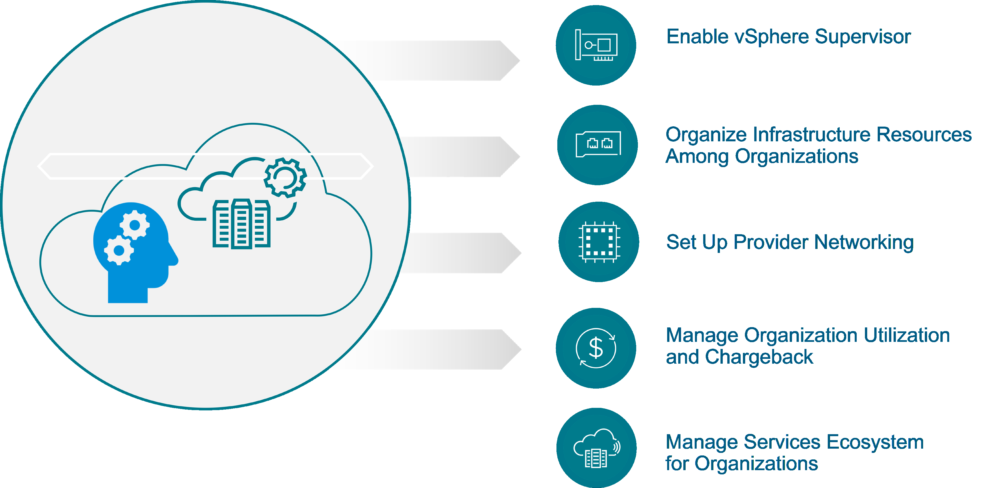
يُكَوِّن مَوارِد البِنية التَّحتيّة الَّتي تَمتَد عَبر Fleets وَInstances مُتَعَدِّدة:
Enable Supervisor
تَفعيل vSphere Supervisor على مَثيلات vCenter. خُطوة إِجباريّة لِنَشر أَحمال العَمَل عَبر VCF Automation.
Create Regions
إِنشاء Regions بِنِطاق جُغرافي — تَجمَع مَوارِد الحَوسَبة وَالذّاكِرة وَالتَّخزين وَالشَّبَكات مِن البِنية التَّحتيّة الأَساسيّة عَبر إِضافة Supervisors مِن واحِد أَو أَكثَر مِن vCenter.
Create Organizations
إِنشاء Organizations مَع حِصَص بِنية تَحتيّة (Infrastructure Quota) وَعَزل شَبَكي.
Configure Provider Network
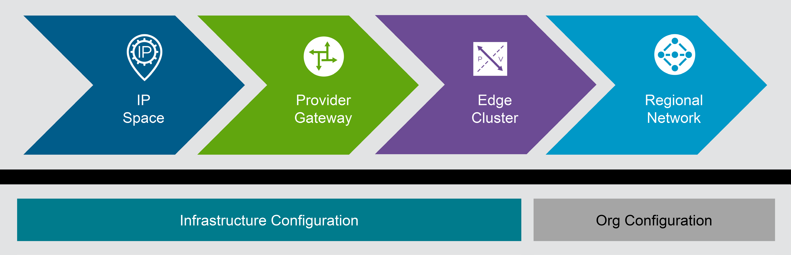
تَكوين Provider Network الَّتي تَرَبِط المُؤسَّسات بِالشَّبَكة الخارِجيّة لِتَمكين حَرَكة المُرور الوارِدة وَالصّادِرة.
Organization Administration — إِدارة المُؤسَّسة
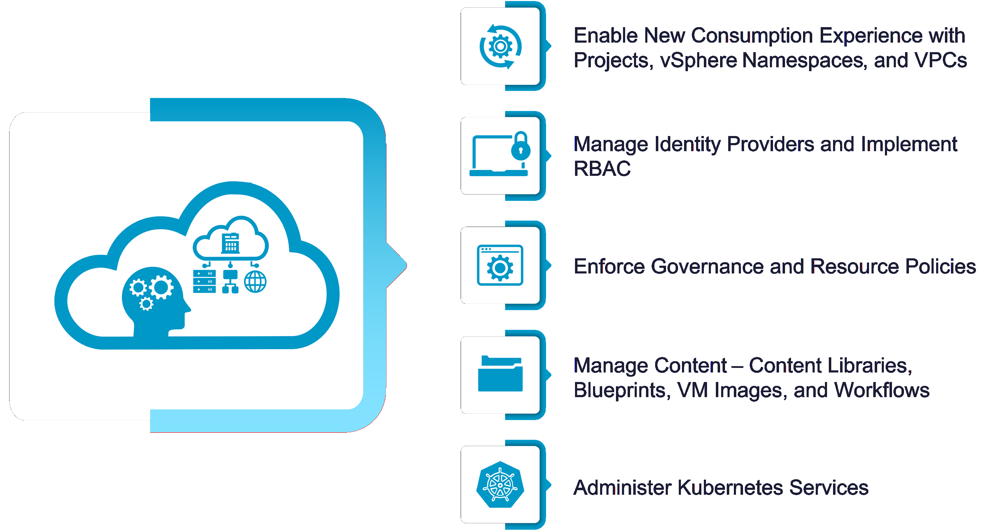
Login & Projects
تَسجيل الدُّخول إِلى المُؤسَّسة — إِنشاء مَشاريع (Projects) لِفِرَق التَّطبيقات مَع رَبط البِنية التَّحتيّة بِمَجموعة مُستَخدِمين.
Namespaces & VPCs
إِنشاء vSphere Namespaces بِحُدود استِخدام وَحِصَص — كُلّ Namespace يُمكِن أَن يَكون تَحت VPC مَعزول.
Governance Policies
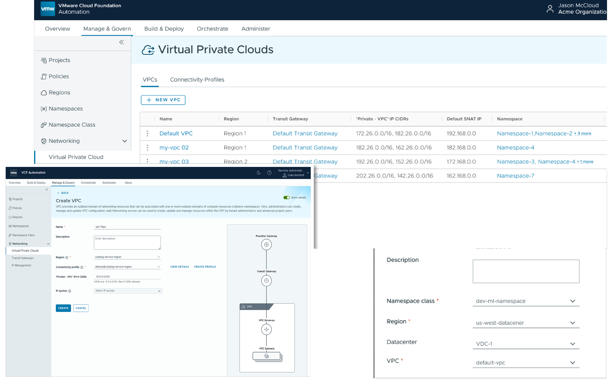
فَرض الحَوكَمة: Quotas (حِصَص), Leases (إِيجارات), Approvals (مُوافَقات), IaaS Policies.
Content & Templates
إِنشاء Content Libraries لِرَفع صُوَر VM — استِخدام Template Designer لِتَصميم Blueprints — نَشر المُحتَوى في الكَتالوج.
Workflow Orchestration
إِمكانيّات التَّنسيق مُتاحة في تَبويب Orchestrate لإِنشاء سَير عَمَل مُخَصَّص.
VPC Architecture — هَندَسة الشَّبَكة الخاصّة الافتِراضيّة
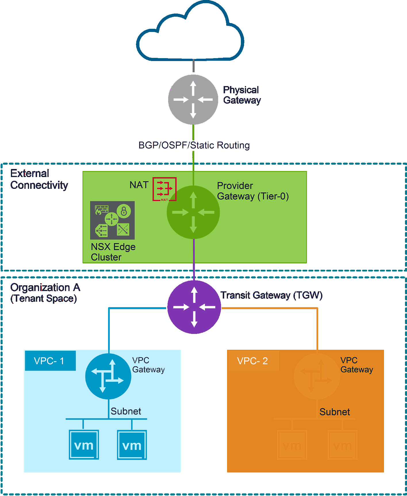
🧠 مُكَوِّنات VPC
- VPC Gateway (VPC GW) — بَوّابة يَتَّصِل بِها كُلّ حِمل عَمَل لِلاتِّصال الخارِجي.
- Transit Gateway (TGW) — تَوجيه مُوَزَّع بَين
VPCsالمُتَّصِلة داخِل مَشروع. - External Connectivity — اتِّصال خارِجي عَبر
VLANأَوProvider Gateway (Tier-0). - Subnets — شَبَكات مَنطِقيّة داخِل
VPCيَتَّصِل بِها أَحمال العَمَل.
End User Consumption — استِهلاك المُستَخدِم النِّهائي
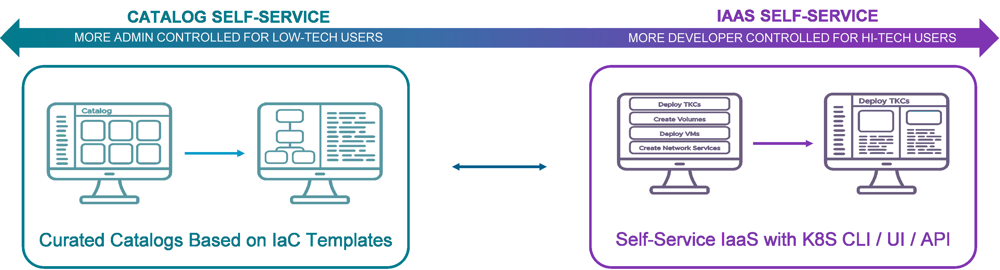
📋 Self-Service Catalog
- عَناصِر كَتالوج مَدعومة بِقَوالِب.
- يَنشُرها
Org Admin. - تَعتَمِد على عُضوِيّة المَشروع.
- طَلَب مِن تَبويب
Build & Deploy → Catalog. - إِدخال: اسم النَّشر,
Namespace,VM Class,Storage Class.
🖥️ Self-Service IaaS
- إِنشاء مَوارِد مُباشَرَة:
VMs,K8s,Volume,Network,Storage. - واجِهة
IaaS Consoleلِلمُسؤولين وَالمُستَخدِمين المُتَقَدِّمين. - نَشر
VMs: اسم + صورةGuest OS. - نَشر
Kubernetes Clustersمِن الواجِهة.
VCF Automation يُقَدِّم خِدمة ذاتيّة لِتَطبيقات AI/ML, Kubernetes, وَVM.Provider Admin: تَفعيل vSphere Supervisor على مَثيلات vCenter — وَهِي خُطوة إِجباريّة.Organization Administrator يُنشِئ المَشاريع وَيَفرِض سِياسات الحَوكَمة (Quotas, Leases, Approvals).VPC: VPC Gateway, Transit Gateway, External Connectivity, وَSubnets.Self-Service Catalog (قَوالِب مَنشورة) وَIaaS Self-Service (إِنشاء مُباشَر لِـ VMs/K8s).vSphere Namespace يُحَدِّد حُدود المَوارِد حَيث تَعمَل vSphere Pods, VMs, وَVKS Clusters.Provider Admin هُوَ https://[vcfa-fqdn]/provider.VCF Advanced Services Overview
اِكتَشِف الخَدَمات المُتَقَدِّمة الَّتي تُوَسِّع إِمكانيّات VMware Cloud Foundation — مِن الذَّكاء الاصطِناعي إِلى التَّعافي إِلى الأَمان المُتَقَدِّم.
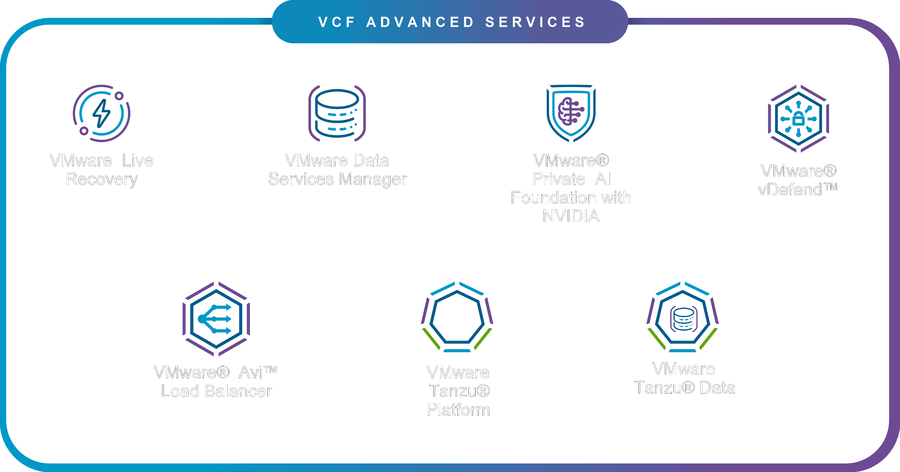
🎯 Learner Objectives
- تَحديد
VCF Advanced Servicesوَحالات استِخدامِها. - شَرح كَيف يَضمَن
Private AI Foundationنَماذِج ذَكاء اصطِناعي خاصّة وَآمِنة. - شَرح كَيف يُوَفِّر
Live Recoveryالتَّعافي مِن الكَوارِث وَالهَجَمات السَّيبَرانيّة. - شَرح كَيف يُوَفِّر
vDefendأَماناً شَبَكيّاً مُتَقَدِّماً. - شَرح كَيف يُوَفِّر
DSMقَواعِد بَيانات كَخِدمة. - شَرح كَيف يُوَفِّر
Avi LBمُوازَنة أَحمال مُتَطَوِّرة.
الخَدَمات المُتَقَدِّمة الخَمس الأَساسيّة
مَنصّة مُشتَرَكة لِلذَّكاء الاصطِناعي تُطلِق إِنتاجيّة المُؤسَّسة:
- Private & Secure — نَماذِج AI خاصّة وَآمِنة وَمُتَوافِقة.
- Speed & Agility — سُرعة وَمُرونة في النَّشر.
- Resource Sharing — مُشارَكة المَوارِد بَين الفِرَق.
- Lower TCO — تَكلِفة إِجماليّة أَقَل.
- Centralized Ops — عَمَلِيّات مَركَزِيّة.
يَشمَل: Model Store, Model Runtime, AI Blueprints Quick Start, Agent Builder Service.
تَعافي واثِق مِن الكَوارِث وَالهَجَمات السَّيبَرانيّة لِـ VMware Cloud Foundation:
- 75% أَسرَع في حَلّ فَترات التَّوَقُّف (IDC 2024).
- Turnkey Cyber Recovery Clean Room — غُرفة نَظيفة لِلتَّعافي السَّيبَراني مَع عَزل شَبَكي بِنَقرة.
- Built-in Validation Tools — تَحديد نُقَط استِعادة ما قَبل الإِصابة.
- End-to-End Workflow Automation — أَتمَتة شامِلة لِسَير العَمَل.
- Instant Power On — تَشغيل فَوري لِلـ
VMsالمُستَعادة على نِطاق واسِع.
يَشمَل: VMware Live Cyber Recovery + VMware Live Site Recovery.
كَشف وَتَخفيف استِباقي لِلتَّهديدات لِـ VMware Cloud Foundation المَرِن:
- 40% تَقليل المَخاطِر.
- 45% أَسرَع في نَشر الأَمان.
- 25% أَقَل في تَكاليف عَمَلِيّات الأَمان.
vDefend Firewall
Distributed FirewallGateway FirewallSecurity IntelligenceContainer Security (Antrea)
vDefend Firewall with ATP
- كُلّ ما سَبَق +
Distributed & Gateway IDS/IPSMalware PreventionNTA, NDR
خَدَمات بَيانات مُضبوطة مُسبَقاً، عالية التَّوَفُّر، وَمُدارة على مُستَوى الأُسطول:
- قَواعِد بَيانات مَدعومة:
PostgreSQL/pgvector,MySQL(MS SQL Serverشَراكة). - العَمَلِيّات:
Provision,Backup,Clone,Patch,Scale,Cluster. - يَعمَل على
VMware Cloud Foundation(Compute + Storage + Networking + Automation & Operations).
خَدَمات مُوازَنة أَحمال Plug and Play لِـ VMware Cloud Foundation:
- 90% أَسرَع في النَّشر.
- 43% أَقَل في تَكاليف التَّشغيل.
- 27% إِنتاجيّة مُطَوِّرين أَعلى.
- 10x أَجهِزة أَقَل لِلإِدارة.
يَشمَل: Load Balancer, Web App Security, Kubernetes Ingress, DevOps Automation.
كَتالوج مُوَسَّع — Extended Catalog
IDC (مارس 2024)، Live Recovery يُوَفِّر 75% أَسرَع في حَلّ فَترات التَّوَقُّف.DSM يَدعَم PostgreSQL/pgvector وَMySQL (مَع دَعم شَراكة لِـ MS SQL Server).vDefend Firewall with ATP يُضيف: Distributed & Gateway IDS/IPS, Malware Prevention, NTA (Network Traffic Analysis), وَNDR (Network Detection and Response).Avi Load Balancer يُوَفِّر نَشراً أَسرَع بِنِسبة 90% مَع أَجهِزة أَقَل بِعَشر مَرّات لِلإِدارة.Private AI Foundation يَتَطَلَّب حَدّاً أَدنى 192 core (3 hosts) وَهُوَ مُتاح فَقَط كَخِدمة مُتَقَدِّمة لِـ VCF.VCF Admin Toolkit
مَرجِع عَمَلي سَريع — أَهَم المَهام الَّتي يَحتاجُها مُسؤول VCF في اليَوم الأَوَّل وَالعَمَلِيّات اليَوميّة.
Day 1 — مَهام ما بَعد النَّشر
التَّحَقُّق مِن صِحّة النَّشر
- تَسجيل الدُّخول إِلى
VCF Operations Console— التَّحَقُّق مِنHome → Overview. - التَّأَكُّد مِن حالة
Healthلِجَميع المُكَوِّنات:vCenter,NSX,SDDC Manager. - التَّحَقُّق مِن
Fleet Management → Tasksلِعَدَم وُجود مَهام فاشِلة.
تَكوين Identity & SSO
- تَكوين
External IDP(Okta / EntraID / ADFS). - نَشر
VCF Identity Broker Appliance. - اختِبار تَسجيل الدُّخول المُوَحَّد عَبر جَميع المُكَوِّنات.
تَكوين الشَّهادات
- مُراجَعة
Certificates Dashboard— التَّحَقُّق مِن تَواريخ الانتِهاء. - استِبدال الشَّهادات الافتِراضيّة بِشَهادات
Enterprise CAإِن أَمكَن. - تَفعيل التَّجديد الآلي.
تَكوين التَّرخيص
- رَفع مِلَفّ التَّرخيص إِلى
License Management. - اختِيار وَضع التَّسجيل:
ConnectedأَوDisconnected. - التَّحَقُّق مِن استِهلاك التَّراخيص.
إِعداد Workload Domains
- تَخطيط وَإِنشاء
Workload Domainsحَسَب المُتَطَلَّبات. - تَكوين
vSAN Storage Policies. - إِعداد
NSX Segmentsلِلشَّبَكات.
Day 2 — العَمَلِيّات اليَوميّة
| المَجال | المَهام الدَّوريّة | الأَداة |
|---|---|---|
| Monitoring | مُراقَبة الصِّحّة وَالتَّنبيهات وَالسَّعة | VCF Operations → Infrastructure Ops |
| Passwords | مُراجَعة تَدوير كَلِمات المُرور — مُعالَجة التَّحذيرات | Fleet Management → Passwords |
| Certificates | مُراقَبة الشَّهادات المُنتَهِية — تَجديد تِلقائي | Fleet Management → Certificates |
| Drift | كَشف الانحِرافات — مُعالَجة التَّغييرات غَير المُصَرَّح بِها | Fleet Management → Config Drift |
| Lifecycle | تَخطيط التَّرقيات — تَطبيق التَّصحيحات | Fleet Management → Lifecycle |
| Capacity | مُراقَبة الاستِخدام — تَخطيط النُّمُو | VCF Operations → Capacity |
| Security | مُراجَعة التَّدقيق — تَفعيل المَعايير التَّنظيميّة | VCF Operations → Security |
| Logs | تَحليل السِّجِلّات — استِكشاف المَشاكِل | VCF Operations for Logs |
أَوامِر وَعَناوين URL أَساسيّة
🧠 Essential URLs & Endpoints
| المُكَوِّن | الرّابِط |
|---|---|
VCF Operations Console | https://[vcf-ops-fqdn] |
VCF Automation (Provider) | https://[vcfa-fqdn]/provider |
VCF Automation (Org) | https://[vcfa-fqdn]/org |
vCenter | https://[vc-fqdn]/ui |
NSX Manager | https://[nsx-fqdn] |
SDDC Manager | https://[sddc-fqdn] |
VCF Operations for Logs | https://[logs-fqdn] |
نَصائح لِلمُسؤول — Admin Tips
❌ أَخطاء شائِعة لِمُسؤولي VCF
- تَجاهُل تَحذيرات الشَّهادات — شَهادة مُنتَهِية تُسَبِّب انقِطاع الاتِّصال بَين المُكَوِّنات.
- عَدَم تَكوين SSO خارِجي — الاعتِماد على حِسابات مَحَلِّيّة يُعَقِّد الإِدارة وَيُضعِف الأَمان.
- تَأجيل التَّرقيات — كُلَّما تَأَخَّرت زاد التَّعقيد وَالمَخاطِر.
- عَدَم مُراقَبة Configuration Drift — تَغييرات غَير مَرئِيّة تَتَراكَم وَتُسَبِّب مَشاكِل.
- نِسيان Depot Updates — في البيئات المُتَّصِلة، تَأَكَّد مِن اتِّصال
Online Depot.
VCF Operations Console → Home → Overview.Fleet Management → Configuration Drift يَكشِف التَّغييرات غَير المُصَرَّح بِها بِمُقارَنة المَثيلات بِالقالِب المَرجِعي.VCF — لِذَلِك المُراقَبة وَالتَّجديد الآلي ضَروريّان.Fleet Management → Lifecycle في VCF Operations.Real-World Scenarios
طَبِّق ما تَعَلَّمتَه على سِيناريوهات واقِعيّة — كَيف تُصَمِّم وَتَنشُر VCF لِمُؤسَّسات حَقيقيّة في قِطاعات مُختَلِفة.
Scenario 1 — مُستَشفى إِقليمي
السِّياق
مُستَشفى إِقليمي بِـ 3 مَواقِع و500 سَرير يَعمَل على vSphere 8.0 مَع Aria Operations. يُريد الانتِقال إِلى VCF 9.0 لِتَحسين الامتِثال (HIPAA) وَتَوحيد الإِدارة.
القَرارات
| القَرار | الخِيار | السَّبَب |
|---|---|---|
| مَسار التَّرقية | Path B — vSphere + Aria | لَدَيهِم Aria Ops — يُرَقَّى إِلى VCF Ops 9.0 أَوَّلاً |
| التَّرخيص | VCF + Live Recovery | التَّعافي مِن الكَوارِث إِجباري لِلقِطاع الصِّحّي |
| التَّسجيل | Disconnected Mode | بيئة مَعزولة لِأَسباب أَمنيّة |
| الأَمان | vDefend with ATP | بَيانات مَرضى حَسّاسة تَتَطَلَّب IDS/IPS |
Scenario 2 — بَنك وَطَني
السِّياق
بَنك وَطَني بِـ 2000 مُوَظَّف — بِنية VCF 5.2 حاليّة — يُريد التَّرقية لِـ VCF 9.0 لِلحُصول على Fleet Management وَتَرخيص مُبَسَّط وَConfiguration Drift لِلامتِثال التَّنظيمي.
القَرارات
| القَرار | الخِيار | السَّبَب |
|---|---|---|
| مَسار التَّرقية | Path C — VCF 5.2 In-Place | تَرقية مَوضِعيّة لِلحِفاظ على الاستِثمار الحالي |
| Fleet Mgmt | SSO + vCenter Groups | تَوحيد الإِدارة عَبر 4 مَثيلات vCenter |
| Drift Detection | Golden Template لِكُلّ vCenter | الامتِثال المُستَمِر لِمَعايير PCI-DSS |
| الأَمان | vDefend Firewall | Micro-Segmentation بَين أَنظِمة الدَّفع وَباقي الشَّبَكة |
Scenario 3 — شَرِكة تَقنيّة ناشِئة
السِّياق
شَرِكة تَقنيّة لَدَيها فَريق Data Science مِن 50 مُهَندِس — تُريد بِناء بِنية تَحتيّة Private AI بَدَلاً مِن الاعتِماد على السَّحابة العامّة لِأَسباب التَّكلِفة وَسِيادَة البَيانات.
القَرارات
| القَرار | الخِيار | السَّبَب |
|---|---|---|
| النَّشر | New Deploy | لا بِنية تَحتيّة سابِقة — نَشر جَديد بِالكامِل |
| الخَدَمات المُتَقَدِّمة | Private AI Foundation | نَماذِج LLM خاصّة — تَدريب وَاستِدلال مَحَلّي |
| الأَتمَتة | VCF Automation + IaaS | خِدمة ذاتيّة لِفَريق ML — K8s + GPU VMs |
| التَّخزين | vSAN + Additional Capacity | بَيانات تَدريب ضَخمة تَتَطَلَّب سَعة إِضافيّة |
Scenario 4 — جِهة حُكوميّة سِياديّة
السِّياق
جِهة حُكوميّة دِفاعيّة — بيئة Air-Gapped بِالكامِل — تَحتاج سَحابة خاصّة مَع أَعلى مُستَويات الأَمان وَالامتِثال.
القَرارات
| القَرار | الخِيار | السَّبَب |
|---|---|---|
| النَّشر | JSON Spec + Offline Depot | بيئة مَعزولة — لا اتِّصال إِنتِرنِت |
| التَّرخيص | Disconnected + Defense Exemption | مُعفاة مِن الإِبلاغ — لا تَدَهوُر عِند الانتِهاء |
| الهَيكَل | VCF Edge لِلمَواقِع المُوَزَّعة | مَواقِع عَسكَريّة مُتَعَدِّدة (8 cores/CPU) |
| الأَمان | vDefend ATP + NSX Micro-Seg | عَزل كامِل بَين المَناطِق الأَمنيّة |
دَليل اختِيار المَسار — Decision Guide
vSphere 8.0 + Aria Operations — لِذَلِك Path B هُوَ المُناسِب: تَرقية Aria → VCF Ops 9.0 + vSphere → 9.0 ثُمَّ نَشر VCF 9.0.Disconnected Mode مَع إِعفاء الدِّفاع — لا تَدَهوُر في الخِدمة عِند انتِهاء الصَّلاحيّة.Private AI Foundation يُوَفِّر نَماذِج AI خاصّة وَآمِنة مَحَلِّيّاً مَع سِيادَة البَيانات — مُتاح فَقَط كَخِدمة مُتَقَدِّمة لِـ VCF.Configuration Drift مَع Golden Templates يَكشِف أَيّ انحِراف عَن المَعايير المَرجِعيّة — ضَروري لِلامتِثال المُستَمِر (PCI-DSS).امتِحان تَجريبي — VCF 9.0 Introduction
اِختَبِر مَعرِفَتَك الشّامِلة بِمَنصّة VMware Cloud Foundation 9.0. اِضغَط Start Exam لِلبَدء بِالتَّوقيت، أَو تَصَفَّح الأَسئِلة بِحُرِّيّة.
Location Agnostic هِيَ إِحدى السِّمات الخَمس: مَحَلّي، سَحابي، حَوافّ، سِيادي — حَصري لِمُؤسَّسة واحِدة.VCF مَنصّة سَحابة خاصّة مُتَكامِلة بِالكامِل، مُؤَتمَتة، قابِلة لِلتَّوسيع، مَبنيّة على خَدَمات مُعَرَّفة بِالبَرمَجيّات.vSAN هُوَ حَلّ HCI (Hyper-Converged Infrastructure) المُدمَج الأَساسي في VCF.VCF Instance يَحتَوي إِجبارِيّاً على Management Domain. نِطاقات العَمَل اختِياريّة.Fleet): VCF Operations وَVCF Automation.vCenter → SDDC Manager → تَكوين vSphere Cluster → NSX → Fleet Management → Operations → Automation.NTP هُوَ خُطوة تَحضير المُضيفات لِمُزامَنة الوَقت — ضَرورِيّة لِعَمَل المُكَوِّنات بِشَكل صَحيح.VCF 5.2 → 9.0 هِيَ تَرقية مَوضِعيّة (In-Place Upgrade) تُنَفَّذ على مَرحَلَتَين بِتَسَلسُل مُحَدَّد.Path B، Aria Operations يُرَقَّى إِلى VCF Operations 9.0 (وَلَيس Aria Operations 9.0).VCF 4.x إِلى 9.0 — يَجِب التَّرقية إِلى 5.2 أَوَّلاً ثُمَّ إِلى 9.0.VCF يُرَخَّص لِكُلّ Core مَع حَدّ أَدنى 16 cores لِكُلّ CPU (8 cores لِـ VCF Edge).Private AI Foundation, Data Services Manager, وَvDefend مُتاحة لِـ VCF فَقَط — لَيسَ VVF.VCF Edge مَحدود بِحَدّ أَقصى 256 cores لِكُلّ مَوقِع Edge.Overview (مُلَخَّص البِنية التَّحتيّة) وَLaunchpad (وُصول سَريع لِأَعمِدة العَمَلِيّات).VCF SSO يَدعَم Okta, Microsoft EntraID, ADFS, Ping, وَGeneric SAML 2.0.vCenter Linked Groups في VCF Operations تَحُلّ مَحَلّ ELM لِرَبط وَإِدارة مَثيلات vCenter مُتَعَدِّدة.Offline Depot مَع VCF Download Tool لِتَنزيل الحُزَم وَتَقديمها.VMware CA وَMicrosoft CA مَع تَحديثات بِدون انقِطاع.Provider Admin: https://[vcfa-fqdn]/provider.vSphere Supervisor خُطوة إِجباريّة لِنَشر أَحمال العَمَل عَبر VCF Automation.Transit Gateway (TGW) يُوَفِّر تَوجيهاً مُوَزَّعاً بِالكامِل بَين VPCs المُتَّصِلة داخِل مَشروع واحِد.Organization Administrator يُنشِئ القَوالِب وَيَنشُرها في الكَتالوج لِاستِهلاك المُستَخدِمين النِّهائيّين.Quotas, Leases, Approvals, وَIaaS Policies. تَحديث Firmware لَيسَ مِن سِياسات الحَوكَمة.Live Recovery يُوَفِّر 75% أَسرَع في حَلّ فَترات التَّوَقُّف (IDC مارس 2024).ATP يُضيف: IDS/IPS, Malware Prevention, NTA, وَNDR. الباقي مَوجود في النُّسخة الأَساسيّة.DSM يَدعَم: Provision, Backup, Clone, Patch, Scale, Cluster.Avi Load Balancer يُقَلِّل الأَجهِزة لِلإِدارة بِمِقدار 10x (عَشر مَرّات أَقَل).VCF مُتَكامِل عَبر: Compute Layer, Network Layer, Storage Layer, وَManagement Layer.Organization Administrator يُدير مَوارِد المُؤسَّسة وَالمَشاريع وَالسِّياسات.VCF 9.0، لا حاجَة لِمِفتاح تَرخيص جَديد عِند التَّرقية مِن v8 إِلى v9 — التَّراخيص لَيسَت خاصّة بِالإِصدار.Complexity), تَكرار التَّدوير (Rotation Frequency), وَفَترة الإِشعار (Notification Period).vSphere Cluster: إِنشاء vDS، تَوسيع vSAN، تَكوين HA وَDRS.Developer Center يُوَفِّر APIs, CLI libraries, وَأَداة Management Pack Builder (بِدون كود) لِبِناء حُزَم إِدارة مُخَصَّصة.NVIDIA AI Enterprise يُشتَرى مُنفَصِلاً وَمُباشَرَةً مِن NVIDIA.VCF 5.2 → 9.0: تَرقية مُكَوِّنات Aria إِلى VCF Fleet 9.0 Management Component.وَرَقة مَرجَعيّة سَريعة — VCF 9.0
| Level | المُكَوِّنات | Notes |
|---|---|---|
| Domain | vCenter, NSX Manager, ESXi Hosts, vSAN/Storage | Management Domain = إِجباري |
| Instance | 1 Management Domain + 0..n Workload Domains + SDDC Manager | وَحدة إِدارة واحِدة |
| Fleet | VCF Operations + VCF Automation (across instances) | مُستَوى الأُسطول |
| Private Cloud | Fleet + all Instances + Advanced Services | السَّحابة الخاصّة الكامِلة |
- ESX Host Preparation (NTP, DNS, VLAN, vSAN disks)
- Deploy vCenter Server
- Deploy SDDC Manager
- Configure vSphere Cluster (vDS, HA, DRS, vSAN)
- Deploy & Configure NSX
- Fleet Management (Identity, Certs, Passwords, Tags)
- VCF Operations Console
- VCF Automation (Supervisor → Regions → Orgs)
| Path | المَصدَر | المَسار |
|---|---|---|
| New | No existing VCF | Fresh Install via VCF Installer |
| A | vSphere 8 (no Aria) | Convert → VCF 9.0 |
| B | vSphere 8 + Aria | Upgrade Aria → VCF Ops 9.0, then Convert |
| C | VCF 5.2 | In-Place Upgrade (Phase 1 + Phase 2) |
| Parameter | VCF | VCF Edge | VVF vSAN |
|---|---|---|---|
| Per-Core minimum | 16 cores/CPU | 8 cores/CPU | 16 cores/CPU |
| vSAN Entitlement | 1 TiB/core | 1 TiB/core | 0.25 TiB/core |
| Max cores/site | Unlimited | 256 cores | N/A |
| Refresh Period | 180 days · Warning at 150 · 90-day compliance | ||
| # | Function | الوَصف |
|---|---|---|
| 1 | Identity & SSO | Okta, EntraID, ADFS, Ping, SAML 2.0 |
| 2 | Certificates | VMware CA + Microsoft CA — auto-renewal |
| 3 | Passwords | Complexity, Rotation, Notification |
| 4 | Tags | Centralized tagging across Fleet |
| 5 | Lifecycle | Online/Offline depot — VCF Download Tool |
| 6 | Config Drift | Desired-state compliance checks |
| Role | URL | المَهام الرَّئيسيّة |
|---|---|---|
| Provider Admin | /provider | Enable Supervisor, Create Regions, Create Orgs, Configure Provider Networks |
| Org Admin | /org/<name> | Projects, Templates, Catalog, Policies (Quotas/Leases/Approvals) |
| End User | /org/<name> | Self-service catalog, deploy VMs, Day-2 actions |
| Component | الوَظيفة |
|---|---|
| VPC Gateway | Routing + NAT + Security policies per VPC |
| Transit Gateway | Distributed routing between VPCs in a project |
| External Connectivity | North-South traffic to physical/external networks |
| Subnets | Isolated/Connected/Routed segments inside VPC |
| Service | VCF | VVF | Key Metric |
|---|---|---|---|
| Private AI Foundation | ✅ | ❌ | 192 cores minimum |
| vDefend Firewall | ✅ | ❌ | 40% risk reduction |
| Data Services Manager | ✅ | ❌ | PostgreSQL, MySQL |
| Live Recovery | ✅ | ✅ | 75% faster recovery |
| Avi Load Balancer | ✅ | ✅ | 90% faster deploy, 10x fewer devices |
| vSAN Additional Capacity | ✅ | ✅ | Extra TiB beyond entitlement |
| Fact | Value |
|---|---|
| IDC Silo cost overhead (Ops) | 42% |
| IDC Silo cost (Infrastructure) | 34% |
| IDC Silo physical footprint | 40% |
| Decision-makers increasing private cloud spend | 78% |
| VCF Cores minimum per CPU | 16 |
| VCF Edge max cores per site | 256 |
| License refresh cycle | 180 days |
| License warning trigger | 150 days (30 remaining) |
| Compliance window after expiry | 90 days |
| Private AI minimum cores | 192 |
| Live Recovery speed improvement | 75% |
| vDefend risk reduction | 40% |
| Avi deploy speed improvement | 90% |
| Avi device reduction factor | 10x |
| Mock Exam pass mark | 75% (30/40) |
قامُوس المُصطَلَحات
| English Term | التَّعريف بِالعَرَبيّة |
|---|---|
| VMware Cloud Foundation (VCF) | مَنصّة سَحابة خاصّة مُتَكامِلة تَجمَع الحَوسَبة وَالتَّخزين وَالشَّبَكات وَالإِدارة في حَلّ مُوَحَّد |
| VMware vSphere Foundation (VVF) | مَنصّة افتِراضيّة أَساسيّة بِدون أَتمَتة كامِلة — لا تَدعَم Private AI أَو vDefend أَو DSM |
| Management Domain | نِطاق الإِدارة الإِجباري — يَحتَوي على مُكَوِّنات الإِدارة (vCenter, NSX, SDDC Manager) |
| Workload Domain | نِطاق عَمَل اختِياري لِتَشغيل أَحمال عَمَل العُملاء — مَعزول مَنطِقيّاً |
| SDDC Manager | مُكَوِّن إِدارة دَورة حَياة البِنية التَّحتيّة — نَشر، تَوسيع، تَرقية |
| Fleet | مُستَوى الأُسطول — يُدير مَثيلات VCF مُتَعَدِّدة مِن نُقطة واحِدة |
| VCF Operations | وَحدة تَحَكُّم مَركَزيّة لِلعَمَلِيّات: المُراقَبة، السِّعة، الأَمان، دَورة الحَياة |
| VCF Automation | مُحَرِّك الأَتمَتة وَالخِدمة الذّاتيّة — Provider/Org/End-User |
| vSphere Supervisor | طَبَقة Kubernetes مُدمَجة في vSphere — تُفَعَّل لِاستِخدام VCF Automation |
| NSX | مَنصّة الشَّبَكات المُعَرَّفة بِالبَرمَجيّات — التَّوجيه، الجُدران الناريّة، VPC |
| vSAN | تَخزين هايبر-مُتَقارِب (HCI) مُدمَج — يَستَخدِم أَقراص المُضيفات المَحَلّيّة |
| VPC (Virtual Private Cloud) | سَحابة خاصّة افتِراضيّة — عَزل شَبَكي لِكُلّ مَشروع دوّن VPCs مُنفَصِلة |
| Transit Gateway (TGW) | بَوّابة عُبور — تَوجيه مُوَزَّع بَين VPCs داخِل مَشروع واحِد |
| VPC Gateway | بَوّابة VPC — توجيه + NAT + سِياسات أَمان لِكُلّ VPC |
| Enhanced Linked Mode (ELM) | وَضع الرَّبط المُحَسَّن القَديم — حَلَّ مَحَلّه vCenter Linked Groups في VCF 9.0 |
| vCenter Linked Groups | مَجموعات vCenter المُرتَبِطة — بَديل ELM لِإِدارة مَثيلات مُتَعَدِّدة |
| Config Drift | انحِراف التَّكوين — كَشف الفَرق بَين الحالة المَطلوبة وَالحاليّة |
| Online Depot | مُستَودَع إِلِكتروني — يَتَّصِل بِـ Broadcom لِتَنزيل التَّحديثات |
| Offline Depot | مُستَودَع غَير مُتَّصِل — لِلبيئات المَعزولة (Air-Gapped) |
| VCF Download Tool | أَداة تَحميل VCF — لِتَنزيل حُزَم Offline Depot |
| Private AI Foundation | مَنصّة الذَّكاء الاصطِناعي الخاصّ — 192 cores حَدّ أَدنى — VCF فَقَط |
| Live Recovery | اِستِرداد حَيّ — DRaaS مَع 75% أَسرَع في حَلّ التَّوَقُّف |
| vDefend Firewall | جِدار حِماية مُوَزَّع — Micro-segmentation + ATP (IDS/IPS, NDR) |
| Data Services Manager (DSM) | مُدير خَدَمات البَيانات — PostgreSQL/MySQL كَخِدمة — VCF فَقَط |
| Avi Load Balancer | مُوَزِّع أَحمال — 90% أَسرَع نَشر، 10x أَقَل أَجهِزة |
| HCI (Hyper-Converged Infrastructure) | بِنية تَحتيّة فائِقة التَّقارُب — حَوسَبة + تَخزين في نَفس المُضيف |
| DRS (Distributed Resource Scheduler) | جَدوَلة المَوارِد المُوَزَّعة — مُوازَنة أَحمال تِلقائيّة |
| HA (High Availability) | تَوَفُّر عالي — إِعادة تَشغيل VMs تِلقائيّاً عِند فَشَل المُضيف |
| vDS (vSphere Distributed Switch) | مُبَدِّل مُوَزَّع — إِدارة شَبَكيّة مَركَزيّة عَبر مُضيفات مُتَعَدِّدة |
| SSO (Single Sign-On) | تَسجيل دُخول مُوَحَّد — Okta, EntraID, ADFS, Ping, SAML 2.0 |
| NTP (Network Time Protocol) | بُروتوكول مُزامَنة الوَقت — ضَروري لِتَحضير المُضيفات |
| Connected Registration | تَسجيل مُتَّصِل — الاتِّصال المُباشِر بِـ Broadcom لِلتَّحَقُّق مِن التَّراخيص |
| Disconnected Registration | تَسجيل غَير مُتَّصِل — تَحميل ملفّ الاستِخدام يَدَويّاً |
| Catalog Item | عُنصُر كَتالوج — قالِب خِدمة ذاتيّة يَنشُره Org Admin لِلمُستَخدِمين |
| Governance Policies | سِياسات الحَوكَمة — Quotas, Leases, Approvals, IaaS Policies |
| Day 1 Operations | عَمَلِيّات اليَوم الأَوَّل — التَّحَقُّق، SSO، الشَّهادات، التَّراخيص، Workload Domains |
| Day 2 Operations | عَمَلِيّات اليَوم الثّاني — المُراقَبة، التَّرقيات، السِّعة، الأَمان، النَّسخ الاحتِياطي |